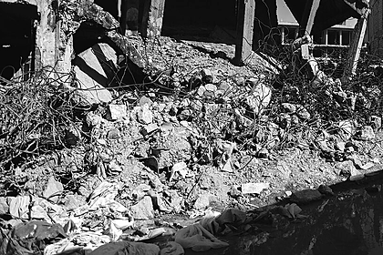
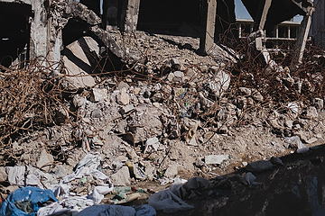

Plates and specimens cut from the brand reference, kept with the reasoning that
built them, so a settled question can be checked instead of reopened. Nothing here
is part of the system. The styles on this page load from
archive/retired.css, which no product page loads.
Earlier whole revisions are frozen as folders: archive/rev2-2026-09-24/ and archive/rev3-2026-09-24/.
AR 01Components no page usedRemoved 14 Oct 2026
A systematic pass on 14 October: every component that no page (home, landing, rotary) and no console screen used, or that contradicted a decision already taken, moved to archive/retired.css. That was the legacy .band--panel alias, the textured video band, the rounded dark band and its grid reveal, .grid-4, .display, the card variants .interactive, .lead, .flat, .quiet and .warm (a card is raised by its edge only), .foot, the radio pill (a choice now sits in a tray), the secondary ink button, and the card and figure lockups, shown as they were:
A second pass on 15 October, which Matt made standing policy: nothing unused stays on the reference. Out went .card.sm, .card.on-dark, .card.sheer and its --panel-sheer, .violator.accent, .eyebrow.strong, .badge.accent (a tint on something that cannot be clicked), the two media bands .media--hero and .media--band, .veil--band, .veil--foot, .gfield--loud, the live contrast readout .gfield-safe, the stage and .vrow. .marginal and .band--tight left the catalog and became the reference’s own furniture in reference.css.
.lockup--card and .lockup--figureinside a cell · a number and what it counts
Brief writing
Build a theory of change from the evidence.
Draws on the full corpus and marks how far each claim can be traced.
12kDocuments ingested
96Countries covered
AR 02The second themeRemoved 14 Oct 2026
Matt removed the dark theme on 14 October: too heavy and too intense for the brand. Every [data-theme="dark"] rule from tokens.css, components.css and explorations.css is in archive/retired.css verbatim, but this page cannot show it any more, because the theme switch went too. Dark bands stay: one ink section on a light page is still the strongest emphasis that costs no chroma.
The infrared rampfrom Pl. 14 · the one place the accent kept a full frame
Dark
Infrared
The dark ramp keeps its warmth, and that asymmetry is deliberate. On
near-black the warm ramp reads as thermal imaging, and on the dove — whose ramp
is reversed, so the bird is hot against a cold ground — it reads as infrared.
That is a real image rather than a tint, and it is the one place the accent earns a
full-frame surface. Light is the restrained state; dark is the one that gets to be
striking. Flip the theme above and watch the dove.
AR 03FoundationsFrom Pl. 01 · Cut 9 Oct 2026
The elevation exploration. Matt kept three of eleven on 9 October, C (block), I (echo) and J (halftone), and asked for J2, a square-dither version of J that appears only on hover. On 15 October he chose I, the echo, then took it back the same day: a card that changes only under the pointer looks like every other card at rest. The question became how a clickable card shows itself at rest, a new exploration in Pl. 01. All eleven, and J2, are here.
Elevation, eleven waysC, I and J kept 9 Oct · hover each
J2 · added 15 Oct: J made square, in the pixel icons’ screen at --ink-55, and nothing until the pointer arrives.
Elevation is for things you can click (Matt, 9 October). Every option is
scoped to a link or a button in the CSS, so a static card cannot wear one by mistake,
and a lift on the page always means the thing under it acts. Static cards keep the edge.
F to K are new. F and G are the border fading away; H and I are the polished ones; J
and K come from the brand’s own print vocabulary, the dither screen and the dashed
grid. B to E trade the soft shadow for a drawn one; C is the loudest object on this
plate and suits one actionable thing per page, such as a CTA card, better than a grid.
The gradient, removed 15 October. Matt took the July red-to-orange out for now, with its tokens. It had no control wearing it since the 14th.
The gradient--grad · a brand asset, not a component
The July red-to-orange, 45 degrees. It is documented here, with the colours, because it
is a brand asset rather than a component: the swatch is the specification and a page
decides where to spend it. No control wears it. The gradient button was
retired on 14 October, when every call to action became .btn.tint.
What it is for
A full-bleed brand moment: a closing band, a cover, a card in a deck, a social image. Something that is about Peace Intel rather than something a person operates.
What it is not for
Text of any size, a control of any kind, or a fill behind content. #FFFFFF on the light end measures under 3:1, and it carries no state, so a person cannot learn what it means by using it.
Once
Per page, at most, and most pages should have none. It is the loudest object the brand owns, which is exactly why it has to be rationed rather than retired.
The call to action is .btn.tint, which puts the accent behind the label as
a 9% wash rather than a fill, so it needs no text colour on orange at all. Anything that
does fill with the accent, the accent violator, writes --accent-fill with
--on-accent: there is no legible text colour on brand orange.
AR 04TextureFrom Pl. 03 · Cut 15 Oct 2026
Matt, 15 October: the grid can be used extensively, as long as two textured sections never touch. This was the plate as it stood, when texture was rationed.
Rare, or it stops being a fingerprint.
The grid used to run under the whole page. Wallpaper flattens everything and
leaves nothing for a textured area to contrast against. It is now a vignette:
a soft pool that fades to nothing before it reaches the edges. Anything
sitting on it must be opaque, or the dashes read through the card face as
dirt rather than depth.
Three maskscentre pool · top-anchored · horizontal band
.textured
.textured--top
.textured--band
AR 05Text lockupsFrom Pl. 04 · Cut 15 Oct 2026
No page used the marginal note, so it left the catalog. The reference still speaks in it, from reference.css.
.marginalthe one place the system speaks in a human register
Most of a design system talks like an institution, because most of it is
rules. A marginal note is where a decision gets a reason attached to it in
the voice of whoever made it. Used sparingly it is the difference between
a document that was compiled and one that was written.
AR 06ControlsFrom Pl. 06 · Decided 14 Oct 2026
Matt chose the tint for every call to action and the tray for every choice among options. These are the specs that led there, as they stood: the plate’s old rule, the selection marks, the act-or-choose comparison, the segmented control and buttons before the change, the white label on the gradient and the case for the tinted button.
One inverted active state, shared by everything.
Solid --ink fill with --bg text is the strongest
non-accent emphasis in the system, and every toggleable atom uses it. It was
already the most consistent thing in the codebase; this keeps it. Primary
buttons are ink, not accent — the accent is reserved for meaning.
Selection pillsa pill selects, a button acts · pick one
Today a pill and an .act are both mono, uppercase and outlined, so a row of
pills reads as a row of small actions. Every option here adds a state mark, the
convention people already read as “choose”, and every one keeps the 2px
corner. My pick would be B for one-of choices, such as the prompt suggestions, and A for
filters: both are the marks a form already uses, so a reader learns one convention for
choosing across the product. C is the softest and the furthest from a button. D fits the
home page’s prompt pills most literally, since each one adds a question.
Act or choosewhat one-colour systems do · Cal.com and the Ford Foundation
The tray, fitted to the surface system. The chosen tile is
--face, the system’s own raised face, so it is the page tone and a
hairline on the page, and the lighter panel on a dark band, where raised means toward
the light. The tray is the surface pressed in one step, so it darkens on every surface;
--wash-2 could not do that, because it lightens on a dark band.
It has its own token, --tray, restated for dark bands.
Cal.com keeps colour for inline links and draws everything else in
ink and grey. Its primary button is near-black with a bevel, a lit top edge and a
shaded foot, and it presses in when clicked. Its one-of choices are a toggle group: a
grey tray in which the chosen option is a white tile with a hairline and the lowest
shadow. Ink never marks a choice. The Ford Foundation draws buttons as
outlines that fill with ink only under the pointer, marks focus with a dotted outline,
and spends its one warm colour on a bar under the current section or the open search.
Its cards do not lift; the title underlines. Both arrive at the same rule: one form
means act, a different form means chosen, and neither difference is a colour. Ours
breaks it, because .btn.primary, .pill.active,
.seg and .act.on all fill with ink.
My pick is Tray for one-of choices: it stays monochrome, it leaves ink
to buttons, and it is the segmented control people already know. Tint
is the stronger signal and fits the states-only accent rule, since a chosen pill is a
state, but it puts tier one’s dress on something that is not evidence.
Bar suits choices that swap the content under them, which is what the
home page’s prompts do, and reads as tabs. Any of the three changes this
plate’s headline rule, one inverted active state shared by everything, so
.seg, .act.on and the radio pill would follow the pick.
Whether chroma should carry action instead, which frees ink to mean chosen, is mocked
on the real pages in explore-cta.html.
Sources: calcom/cal.com
(ToggleGroup, button shadow tokens) and the
fordfoundation.org stylesheet.
Segmented controlwas four near-identical components with two activation attributes
When two stack they stay identical. Hierarchy comes from the label beside them and from reading order, never from shrinking the second row.
Buttonshover each · the gradient appears at most once per view
The white label on --gradmeasured at both ends of the fill · pick one
Today. 3.90:1 at the red end, 2.79:1 at the orange. Fails AA for button text everywhere.
Deeper fill. Same hues, darker: 4.63:1 and 4.64:1. Passes AA end to end.
Bolder label. 19px bold, orange end moved to #F66409: 3.90 to 3.11:1. Passes for large text only.
Drop shadow. The same ratios as today. Helps the eye; counts for nothing in WCAG.
The deeper fill is the only option that keeps white and passes AA everywhere on the
button. Its cost is glow: the control reads as a deeper red-orange and stops looking lit
from inside. It would be a token for this one control, --grad-deep; the
brand gradient itself stays as it is for full-bleed moments, where no small text sits on it.
An accent button from the ingested chip.btn.tint against .btn.brand · think carefully
The ingested chip’s wash and hairline, at button size and in the button’s type.
What it borrows from
●1● Tier 1 ingestedIngested
Tier one: the evidence is held in full.
For it: it solves what the brand fill never has. The label is
--accent-text on a near-paper wash, so it clears AA in both themes with no
token pair to forget, and it is quieter than a slab of orange, which suits the restraint
pass. Against it: that wash and hairline are how the product says
tier one, held in full, and evidence tiers carry product meaning. A button in the
same dress teaches a reader that orange-tinted means verified, then breaks the lesson;
it would be worst inside an answer, beside real citations.
If it is adopted: it replaces .btn.brand, so there is still
one accent button; it keeps the button’s sans and 4px corner while chips stay mono
and 2px; and it never appears in an answer, a citation list or the evidence pane. On those
terms I think it is the better accent button. (The Buttons row above shows
.btn.brand twice under two names; one goes either way.)
The tint, leading: settled 15 October. Matt took A’s solid edge and deeper dark wash with C’s arrow, and that is now .btn.tint itself. These specimens render on today’s base, so every column already carries the final edge and arrow; the differences that remain are each option’s own.
The tint, leadingExplorationthree ways to make it louder than the ghost · on paper and on a dark band
On paper the tint already leads. On a dark band it does not: the ghost’s label is the
lightest thing on the band, and the tint’s wash barely leaves the ground.
A draws the edge solid everywhere and doubles the wash on a dark band; on
paper the wash cannot deepen, because past 9% the label drops under 4.5:1.
B changes nothing on paper and fills the button with the accent on a
dark band, with ink on it (6.66:1), which is the one place a solid orange reads as light
rather than as a slab. C gives the tint the send glyph’s arrow,
which a ghost never has, so the action that leads is the one that goes somewhere; it moves
a cell under the pointer. They combine: my pick is B with C.
AR 07Evidence tiersFrom Pl. 07 · Cut 15 Oct 2026
Matt, 15 October: keep the tint for what can be clicked. The badges only label, so they became the same three forms in ink: filled, hollow, dashed. Citations open a source and kept their accent.
The tinted evidence badgesuntil 15 Oct
Ingested full text on platformAbstract paywalledWeb treat with skepticismIngested
AR 08The consoleFrom Pl. 08 · Cut 15 Oct 2026
The console as it was drawn until 15 October, when Matt sent the live product and asked for it skinned in the brand, every element.
The same object, indoors.
If the landing page and the console do not feel like one product, the brand
has not survived the handoff. Every token here is the same one the marketing
pages use. Switch the theme and this moves with the rest of the document.
The console now takes the marketing pages' typography. Headings in the
serif, body copy in DIN, which is the pairing every other surface already uses. It had
been all-sans, and that made it read like a tool which happened to share a palette with
the brand rather than part of the same publication. An answer is a document, and
documents have serif headings. Rails, labels and metadata stay mono, because those are
instrument readings rather than prose.
The raised surface here is the resolved one from Pl. 15: a hairline plus a three
percent wash. The wash is what was liked about this plate, and it is now the whole
system rather than one option on a switch.
PEACE_INTELBeta
You
What happened in Darfur between 2003 and 2011? Who intervened, what did they do, and what resulted?
Peace Intel
Three interventions, three different failures.
Between 2003 and 2011 the conflict in Darfur drew three distinct intervention efforts, and they are worth separating because they failed for different reasons.
The African Union deployed AMIS in 2004 with a monitoring mandate it was never resourced to fulfil ●1. Its successor UNAMID, authorised in 2007, was the largest peacekeeping operation in the world at its peak, yet its civilian protection record remains contested ◐2. Parallel mediation in Abuja produced an agreement in 2006 that most rebel factions declined to sign ●1.
A frequently cited figure for displacement in this period does not trace to a primary source in this corpus ↗3, so treat it with caution.
Evidence · 3 sources
Scope: all datasetsEvidence only
The user speaks in a bubble on the raised surface; the agent has no bubble at
all. That asymmetry is deliberate — it makes the answer read as a document
rather than as a chat message, which is the entire product claim.
Revised the same day. Matt found the pixel glyphs (11 cells at 2px, solid) too disruptive inside the interface, so the console’s icons became Lucide lines. The library’s two 36px counts (6,582 curated papers, 9 shown for this view) became one line, the serif entry titles became DIN, and the tip under the composer (“Try naming a conflict, a region or a kind of intervention”) was removed.
Projects, round one (15 October). Three still mockups of how projects could sit in the console, after ChatGPT’s sidebar and Claude’s project page. Matt liked them and asked for them wired into the console as a prototype, which replaced them the same day, with three changes: what a project produces became documents of several kinds rather than reports; its sources became visible and addable; and the scope in a project chat lost its remove button, because someone working in a project wants its sources. The rail’s Chats / Reports / Projects tray (.rail-head) went with them. The send button carried a Lucide line arrow until the same review, when Matt asked for the call to action’s pixel arrow on it too.
ProjectsExplorationafter Claude and ChatGPT · the rail, a project’s home, and a chat inside one
Today a project hides behind the rail’s Projects tab, and nothing in a chat says which
project it belongs to. Both products that do this well make the project a place. ChatGPT
lists projects in the sidebar above the recent chats, each opening to its own chats.
Claude opens a project to a page of its own, with the project’s instructions and
knowledge beside its chats, and starts every new chat there inside it. For Peace Intel the
knowledge is the natural part: a project is a slice of the library, the
sources its answers are drawn from.
Projects
Recent
The rail. Projects are a section, not a tab. The open one shows its chats on a hairline; a chat outside any project stays under Recent.
Sahel portfolio review
Five livelihood programmes, appraised against the evidence before the March board.
Chats in this project
The home. A project opens to its own page: what it is for, a composer that starts a chat inside it, its chats, and beside them its instructions, its sources and its reports.
Sahel portfolio review · 42 sources
The chat. Inside a project the toolbar names it as a breadcrumb, and the composer carries it as a scope: these 42 sources, removable in one click to ask the whole library. The library pane would open on the project’s sources.
My recommendation is all three, as one flow, and the rail’s Chats /
Reports / Projects tabs go: reports move into the project they belong to, and a chat with no
project stays under Recent. The cost is product work rather than brand work: a project needs a
stored source list and instructions, which the library already half has as a filter.
Projects, round two (Rev 11, 15 October). The round-one mockups wired into a working console: a project’s page with its chats, documents, sources and instructions in four parts, the library pane listing the project’s sources, and a line in the composer naming them. Later the same day Matt asked for an overhaul after Claude’s project page: the pane became the project’s panel, sources became context in a dialog, documents became artifacts, memory was added and the composer’s line went. Shown as it was, in two stills.
A project’s page, Rev 11.A chat inside a project, with the line “Answers draw on” in the composer.
The object mark, three of four (Rev 11). Four candidates for one detail that marks papers and documents as objects. Matt chose D, the legend, in Rev 12; it is in components.css as .obj. These are A, B and C.
Can Employment Reduce Lawlessness and Rebellion? A Field Experiment with High-Risk Men●Blattman, Annan · 2016 · Empirical study
Portfolio appraisal, draft 2Document · Oct 12
A · Tab. A short ink tab on the top edge, the tab the margin numeral wears in Pl. 20.
Can Employment Reduce Lawlessness and Rebellion? A Field Experiment with High-Risk Men●Blattman, Annan · 2016 · Empirical study
Portfolio appraisal, draft 2Document · Oct 12
B · Corners. Four ink corner marks, the brackets that frame the dove in the logo. Squares the corner.
Can Employment Reduce Lawlessness and Rebellion? A Field Experiment with High-Risk Men●Blattman, Annan · 2016 · Empirical study
Portfolio appraisal, draft 2Document · Oct 12
C · Fold. The top right corner turned down three cells on the brand cell, the pixel arrow’s family.
AR 09MotionFrom Pl. 10 · Cut 9 Oct 2026
Cut by Matt on 9 October: .mo-settle, the one primitive no shipped page used, and the record of how the group reveal was chosen. The five that remain are all used on the Rotary page.
.mo-sweep is gone. A raking pass of light across a
surface was the one primitive with no counterpart in the work — nothing in
research gets swept — and on a real card it read as the shimmer on a loading
skeleton, which is a promise that data is about to arrive. Removed rather than
retimed. Four have been added in its place, all quieter than it was.
.mo-settlea measurement, not a counter roll
12kDocuments
96Countries
The figure was measured, it did not accumulate. A damped rise says that; a spinning counter says the opposite. The travel doubled to 16px and the duration to 1100ms, for one reason: a settle is only legible if you can watch it decelerate, and eight pixels in half a second has no deceleration in it the eye can find.
.mo-dealon a citation list · order carries meaning
Ordered by tier, so the sequence itself says which evidence is strongest. This is the only place order is allowed to mean something; everywhere else a stagger is just delay.
How the group reveal was decidedfive candidates · one kept
Five ways of bringing a group of things onto the page were built and compared on the two
cases that matter, a card and a citation list. .mo-unmask treated the block
as one object and revealed it as a surface, which said nothing about the order inside it.
.mo-stagger carried the order but faded each item, and a fade at 10px mono is
a flicker. The three syntheses asked whether the sequence could be carried by the mask
instead of by opacity: .mo-cascade timed the children to one travelling edge,
.mo-uncover gave every child its own mask with no opacity anywhere, and
.mo-deal added a six-pixel rise and a tighter edge to that.
Deal is the one kept, on 2026-09-26. The other four are removed from the
stylesheet rather than left in as options, because a motion set with five ways to do one
thing has no grammar.
.mo-dealon a card
Ingested
Laid down.
The rise gives each part a definite top, which reads as placement rather than as revelation.
IngestedAbstract
Three parts of one card, placed in order rather than faded in.
.mo-dealon a citation list
Four rows deep, which is where a reveal either holds or falls apart.
What to look for. On the card, whether the reveal reads as one thing
arriving or as three things arriving separately — a card is one thing, so the
second is wrong however pleasant it looks. On the list, whether you can still tell
which source came first, because that order is the epistemics and the only reason to
animate a citation list at all.
The cost of the choice, stated. Deal is the most animated of the five
and the only one that moves, so it is the one most likely to read as a template on
second viewing. The mask does most of the work and the rise is six pixels, which is
what keeps it the short side of that line. Use it where the arrival is the point, and
not on something a reader will pass four times in a session.
Cut 15 October: resolve, develop, focus and rule. Matt kept .mo-deal and retired the rest, so the system has one entry move. The pages that used them now deal their groups instead. This is the plate as it stood.
Everything here is between two and three times slower than it was.
The old set ran 320 to 520ms on the reasoning that interface motion should be
quick, which is right for a control answering a click and wrong for a reveal:
a reveal that finishes before the eye arrives at it did not happen. Resolve
was the signature move of the system and it was the one nobody could see.
Entry motion now runs 900 to 1600ms. Hover, focus and press are untouched.
The test is whether you can describe what happened after seeing it once; if
the answer is something appeared, it is too fast.
.mo-resolvethe signature · once per view
Ingested
Evidence emerges from noise.
Content arrives through clearing dither rather than fading or sliding. It states the product's claim without a word of copy.
.mo-developnew · the only one safe on a block of copy
Developed
Tone comes up, nothing moves.
The same idea as resolve, in density rather than in noise. Text that fades in from transparent flickers at small sizes; text that comes up in contrast does not, which makes this the one to use on a paragraph, a table or a list of sources.
.mo-focusnew · figures and imagery, never type
Focused
Soft, then sharp.
Six pixels of blur is enough to read as out of focus and little enough that the shape is legible the whole way. Two pixels of rise, and nothing else: blur plus travel plus fade is three things happening, and the third is what makes a reveal feel like a template.
.mo-rulenew · the default for a section head
Ruled
The line arrives first.
A hairline draws across the top and the content writes in underneath it once the line has landed. A typographic gesture rather than an effect, which is why it never looks like software.
.mo-dealdecided · the one group reveal
Dealt
Laid down, in order.
Every child carries its own soft mask, staggered, with a six-pixel rise under it. The mask edge is 12% of the child’s own height, tight enough that each item has a definite top, so the block reads as being placed rather than as being uncovered.
AR 10MountsFrom Pl. 11 · Cut 9 Oct · retired 14 Oct 2026
Cut by Matt on 9 October: corners, recess, seam, mat and registration, leaving rules, dissolve and the rail. The rail was cut that evening; it is at the end of this section. The original plate introduction, the four mounts, the corners-versus-registration comparison and registration itself follow as they were.
Framing the one thing that matters.
Registration was the only framing device the system had, which made it the answer
to every question, which is how a signature turns into a tic. It is also the
loudest thing here: four accent brackets converging is an event, and most figures
want to be presented rather than announced. Under 4px corners it reads
angular besides — the brackets are the last right angle left on the page.
So it becomes one of eight and stops being the default. Each of these marks a
block as the figure, and each says something slightly different
about it. None of them uses chroma unless it is opted into.
One per view, and preferably one per page. The rule that governed
registration governs all of them, for the same reason: a page where three things
are framed has nothing framed. Mixing two different mounts on one page is worse
than using the same one twice, because then the difference between them has to
mean something, and it does not.
2 · .mount--cornersinstrument, whispered
Finding
Two corners, on a diagonal.
Registration’s idea at a whisper: a hairline elbow inside the block rather than outside it, with the elbow rounded to the same 4px as everything else. Four corners is a frame, and a frame that does not close reads as one that failed to load. Two lets the eye complete the rectangle, which is more elegant than being handed it.
3 · .mount--recesstonal · no lines at all
Finding
Set into the page, not laid on it.
No border and no drawn mark anywhere: the face is the raised tone and an inset shadow darkens it toward its own edges. The most restrained thing in the set by some distance, and the only one that survives being used twice on a page, because there is no motif to repeat.
4 · .mount--seameditorial · a claim, not a figure
Finding
One rule down the left, and nothing else.
The pull-quote move, and the only mount that reads as an argument rather than an object. A seam says this passage is being quoted, which is right on a finding and wrong on a screenshot. Ink by default; the accent variant costs the page its one warm moment.
5 · .mount--matgallery · the most formal, and the most expensive
The figure the page exists for
4.2MCitations mapped
Two frames and a great deal of air. The mat is not decoration: it is the
statement that this object is worth the space around it. It is the one mount
that takes a child wrapper, because a mat genuinely has two parts — an
<img> or a <video> straight inside counts
as the content. Use it once, on the thing the page is for.
Head to headthe same three cards, marked two ways · scroll slowly
The real question is not which mark is nicer on one card. It is what happens when
the motif repeats, because a series is where a signature either holds or becomes
a tic. Registration was written with a one-per-view rule precisely because it does not
survive repetition; corners were drawn at a hairline partly to find out whether they do.
.reg · six-pixel accent brackets
ingestedIngested
Full text on the platform.
The citation points at the passage, and you can read the surrounding argument.
abstractAbstract
Held, and the full text is not.
Enough to place a finding, not enough to verify how it was reached.
webWeb
Found outside the corpus.
Carries no accent colour at all, because the point is that it has not been through the same scrutiny.
Three instruments locking on three targets at once. Each one is arresting and together
they cancel: the eye has nowhere to land, the accent count triples, and the readouts
start reading as a row of labels rather than as a measurement. It also needs
--sp-16 of clear space under every card, because the marks live outside
the box, which is why this column runs so much taller for the same content.
.mount--corners · two hairline elbows
Ingested
Full text on the platform.
The citation points at the passage, and you can read the surrounding argument.
Abstract
Held, and the full text is not.
Enough to place a finding, not enough to verify how it was reached.
Web
Found outside the corpus.
Carries no accent colour at all, because the point is that it has not been through the same scrutiny.
The same gesture at a whisper, and it survives being used three times. Two corners on
a diagonal leave the other diagonal open, so the cards still read as a set rather than
as three framed objects. No chroma, no readout, no clear-space requirement, and the
4px elbow agrees with the corner radius instead of arguing with it.
These are scroll-linked now, off the same --reg progress
as the column beside them: the elbows converge as each card comes up to the reading
position and release as it leaves. Twelve pixels of travel against registration’s
thirty-four, because a hairline crossing that distance is a thing flying in.
The cards have also given up their own borders, which is the rule that comes with the
mark: an elbow inside a drawn edge is the same line twice.
Corners can replace registration in most of its jobs, and should.
Everywhere the intent is “this is the figure” — a card, a screenshot,
a set — the quieter mark says it as clearly and costs nothing in restraint.
What registration still has that corners do not is time. It is
scroll-linked: it acquires, holds for a third of the pass, and releases, so it is the
only mark in the system that says now rather than here. That is worth
keeping for the one moment on a site where something genuinely arrives — the
answer resolving, the source the cursor is on, a single hero figure — and it is
worth giving up everywhere else.
Put another way: corners are punctuation and registration is an event. A page can be
full of punctuation. It can hold one event.
8 · .regthe incumbent · scroll-linked · at volume
Registration is still here and still the strongest thing in the set. It is
scroll-linked rather than triggered: an element is acquired as it
enters, locked when it reaches the reading position, and
released as it leaves. Script writes a single --reg
progress value from 0 to 1 to 0 and every mark is driven off it, so the brackets
track scroll continuously. The lock holds for 30% of the pass, which is what turns
it from a flicker into a state.
Never on a full-width element. A bracket aimed at the corner of a
band that runs edge to edge is aimed at the corner of the window: there is no gap
for it to close and nothing for it to pick out, so it reads as a frame around the
browser, or at the top edge as a progress bar. It needs a box with visible air on
both sides, so the eye can watch the mark close the distance. A figure, a card, a
quoted panel, a console. Not a hero, not a band, not a section.
system.js warns in the console if it finds one wider than 90% of the
viewport, rather than suppressing it, because a silently dead effect is worse than
a visible mistake.
One rule holds the mark together: the bracket is as thick as the space it
holds off the box. Stroke 6, gap 10, arm 24, travel 34. The 10px gap is
also what lets the brackets survive rounded corners — a right angle sitting
on a 4px edge is a mistake, one sitting 10px off it is a separate object
and the radius underneath is none of its business. That is why the old
squared-corners constraint is gone rather than the marks.
Source 01 · ingested
Acquired
Scroll slowly through this block.
It acquires as it rises, locks at the reading position, and releases as it goes. The readout only appears at lock. It is held to the text column on purpose: at full width there would be nothing for the brackets to close on.
Locked
On a raised surface
The marks sit outside the trim.
Stroke and gap are one rhythm rather than two, which is what makes the bracket read as a drawn object rather than as a thin outline that happens to be nearby.
Locked
On dark
The marks take the on-dark accent.
No override. The surface context has already remapped the accent, so the brackets follow it the way everything else does.
How to pick. By what the block is, not by which looks best on a
specimen sheet. A run of copy takes rules or a seam. A figure or a screenshot
takes a mat, a recess or corners. Imagery takes dissolve. A numbered figure in
a sequence takes the rail. Registration is for the one element on a page you
would point at, and it is the only one of the eight that anybody will notice
you used.
Registration also needs clear space around it as well as inside it. The marks
live outside the box, so a registered element wants at least
--sp-16 below it; at the usual section rhythm the brackets of one
element and the readout of the next collide. That is a second reason the rule
is one per view. A registered card takes one extra step of internal padding as
well, 32 rather than 24, because the corner inside has to be air.
The readout is the part most likely to tip into costume. Keep it to a few
characters and make it say what was acquired rather than perform a status.
SOURCE 01 · INGESTED is doing work. SCANNING… is
a film prop.
The railcut the evening of 9 Oct · with its four developed versions
The rail survived the review and was developed four ways the same day. Matt then cut it whole: the numeral version was the strongest, but a vertical ledger in the margin read as too avant for the brand. Rules and dissolve remain. The rail as it was, then the four versions:
3 · .mount--railbibliographic · where the number is real
Fig. 3 · Mediation outcomesFinding
A margin rule and a plate number.
Lifted out of monograph and catalogue setting, where a figure is numbered because it will be referred to later. The label and the rule run parallel rather than the label interrupting the rule: interrupting needs the label to carry the surface colour behind it, which means a per-surface override, which is the one rule this system will not break.
Use it where the number is real. A Fig. 3 on a page with no
Fig. 1 or 2 is a costume, the same mistake as SCANNING… on a
readout.
The rail, developedfour directions · none picked
Fig. 3 · Mediation outcomesA · Ruler
Ticks against the rule.
The margin reads as a measure: the instrument register, with no accent and no motion.
3B · Numeral
The number, set large.
The figure number in the serif at the head of the rail, the rule hanging from it. A catalogue rather than a footnote, and the most distinctive of the four.
Fig. 3 · Mediation outcomesC · Spine
A ruled spine.
A 2px ink rule with a hairline beside it. The heaviest of the four, and the one nearest the seam that was cut.
Fig. 3 · Mediation outcomesD · Fade
A rule that runs out.
The rule dissolves into the page, the way every texture in the system does.
Dissolve, as a mountmoved the night of 9 Oct
Matt ruled dissolve a full-width background only. As a mount it framed a clip set in a column, which the video treatment’s own placement rule forbids. It continues as .vmap--dissolve on a full-bleed map.
.mount--dissolveas a mount, before it moved to the backdrop
No edge at all: the block’s own edges break up into the dither and stop.
The element is masked by a soft ellipse and the overlay carries the dither
tile masked by the inverse of it, so the dots appear exactly where
the fade is happening. Solid centre, then dots, then page. The one mount that
could not have come from anywhere else. Imagery and figures only
— a mask over body copy fades the ends of lines, and because it is a mask
a contrast check will never see it.
The last mountretired 14 Oct
Retired by Matt on 14 October, after the rail and dissolve: what a mount was for never read clearly, and the two pages using one were using it as a divider. The plate as it stood:
Framing the one thing that matters.
A mount marks the single block a page is about, the way a mat marks a print: this is
the figure the page exists to show. Eight were built and one remains. Corners, recess,
seam, mat, registration and the rail were cut on 9 October, and dissolve left the family
the same night to become the edge of a full-bleed backdrop. All of them are in the archive
with the reasoning that built them.
Once per page at most, and only on a figure. A section head that wants a
rule takes .mo-rule, which draws one rule above as it arrives. A page where
three things are framed has nothing framed.
.mount--rulestypographic · the quietest
Finding
The rules draw outward from the centre.
A hairline above and below with real air between them and the content. The oldest device in book design and the one that gets out of the way most completely, which is why it is the one to reach for first. The movement is the whole effect; there is nothing else to look at.
AR 11Gradient fieldsFrom Pl. 12 · Cut 15 Oct 2026
The history of the fields, cut so the plate states what a field is rather than how it got there. The live contrast readouts that sat under two of these bands were retired with it.
An atmospheric background built only from tokens. Three rules hold it together.
Monochrome: paper and ink, no accent anywhere in the ramp.
Asymmetrical: no blob is centred, no two are the same size, and two
of the three are anchored off-canvas, so the field reads as something much larger
that the viewport happens to be cropping. A centred radial is a spotlight.
Grainy: ordered Bayer dithering against five stops, at the same cell as
the dove and the magnifying glass.
The ramp spans the page tone to --line-2, fourteen percent
of ink across five stops. It went to --wash-1 first, at three percent, and
three percent turned out to be past quiet into invisible: on a real page the field was a
rumour. Fourteen is the hairline tone, so the darkest part of a field is exactly as dark
as the line around a card. The field never introduces a value the page does not already
use. The step before that was fifteen percent of the warm tone, which is a
different failure: that one carried chroma and read as a thing on the page.
And every field moves now. The opt-in inverted: a field is live unless it
carries .gfield--still. The two changes are one decision. A still field at
this weight is not atmosphere, it is a slightly uneven sheet of paper — the
movement is what makes that weight legible as weather rather than as a printing fault. And
the ramp got quiet enough that it safely can move, which is what retired the old
restriction to dawn.
The chroma came out on 25 Sep, and it was the right call twice over.
The old ramp mixed ink into the accent on the argument that mud stops a large orange
wash reading as a sale banner. True, and solving the wrong problem: a field is the
largest object on whatever page it appears on, so whatever colour it carries becomes
the page’s colour, and an atmospheric wash of brand orange in front of an
institutional reader is a consumer move however muddy it is. It also forced the
text-safety exception below, because a ramp with hue in it reaches a value dark
enough that --ink-70 stops clearing AA over the bottom stop.
With no hue there is nothing for a headline to fight, nothing to clash with a
photograph laid over it, and nothing to re-tune if the accent ever changes. The
chroma-free variant built last round was the test of this, and it read better than
any of the warm ones, so it stopped being a variant. Muddy now means tonal:
three ellipses of the same grey family compounding into values none of them contains
on its own.
The cell is 3, and it is measured rather than chosen. The question was
whether the system matched the original site, and it did not: run lengths in
hero-dove.mp4 and hero-glass.mp4 give a modal cell of two source
pixels in a 720px master drawn across a 1120px stage, which is 3.1 CSS pixels on screen.
The handoff clips were at 1.6 and the fields at 2, so the brand’s own assets had
always been about twice as coarse as anything built since. Three is what makes it read as
distinctly pixelated rather than merely fine-grained, and one number now governs
the fields, the clips, the rendered grid and the motion primitives.
The white floornew 9 Oct · less heavy, same darkness
Ember · before, no floor
Ember · floor .4
Heat under --gfield-floor, taken as a share of each field’s own peak,
renders as the paper itself, and what is left is stretched so the peak keeps its tone. A
loaded mood still reaches --line-2; a quiet one keeps its own lightness. Every field on this plate and on the landing page now has it;
0 brings back the field as it was.
Five moods, the long note
One gradient shape used everywhere is the same problem as one raised surface used
everywhere: it becomes a signature, and by the fourth page it reads as a template. Each
of these is a different asymmetry, not a different colour. The ramp
never changes, and now that the ramp is monochrome the shape is the only thing
that varies — which is a better system than it was, because five moods that differ in
colour are five brands and five that differ in weight and placement are one. Nine were
built and four were cut: ridge, shore, cleave and verge all put a hard directional line
through the frame, which is graphic rather than ethereal. They are in
archive/rev3 if a page ever needs a field with a direction.
Where the ramp endsthe hairline tone against the muted-text tone
--line-2 · 14% · current
--ink-35 · 35% · the loud option
--line-2 · a different mood, same ceiling
Same mood, same cell, same five even steps: only the last stop moves. At
--line-2 the field is a ground and type can sit anywhere on it. At
--ink-35 it is a graphic with type on it, and the copy has to be placed
around the shape rather than over it — which is a different kind of asset and a
different amount of work per page. Both are real options; the middle one is the louder
of the two and it is here to be judged against its neighbour rather than on its own.
All of them moveand a still one is the reduced-motion fallback
Dawn · live
Ember · live
Dawn · .gfield--still, for comparison
The third tile is the argument. It is the same mood and the same ramp with the motion
turned off, and at this weight it is not atmosphere — it is a slightly uneven sheet
of paper, which is worse than no field at all. A field that does not move is not
worth the canvas it costs. The old restriction to dawn existed because the loaded
moods were too heavy to move behind an empty band; at the hairline tone none of them is,
so ember moves too.
.gfield--still remains for one case and it is not a design choice: under
prefers-reduced-motion every field stops, and there a still field is a correct
fallback rather than a decision.
These three had been frozen since the .field → .gfield rename:
the markup said field--live, the driver looked for gfield--live,
and a live field that never animates looks exactly like a still one. Nothing errored and
nothing logged. Fixed here, and it is the argument for keeping a plate that shows the
same mood both ways — the comparison is what makes a silent failure visible.
Geometry is data, not code. Each mood is a list of two primitives: a
blob is heat around a point and a band is heat
along a line. Adding a tenth mood is adding a row to a table. That matters more
than it sounds, because variety only survives if it is cheap to extend.
The finish is settled: ordered Bayer dithering at the brand cell, which is three.
Fractal grain was explored alongside it and dropped, because it looked like film,
which is somebody else's language. A fourteen-pixel mosaic was explored and set
aside. Both are preserved in archive/rev3.
The live field drifts its shapes and travels the noise lattice against time. Periods run
27 to 57 seconds and none of them share a factor, so it never visibly repeats. It runs at
ten frames a second, which is not a compromise: a dithered image at 10fps
is what the video assets look like, and at 60fps the dot pattern crawls and reads as
noise. It repaints only while on screen, stops entirely under reduced motion, and is held
to a pixel budget so a full-height field cannot cost what a small one does. No video file,
no network request, and it re-maps itself when the theme flips.
The case that used to failsoot, measured
Soot
This band used to fail, and the measurement is why it stopped.
Under the warm ramp the loaded moods reached a stop where the muted ink dropped to
about 3.6:1 and quietly failed AA. That is the usual way a gradient background goes
wrong, and nothing on a page normally says so. The monochrome ramp cleared it and the
ceiling settles it: the darkest pixel a field can now produce is --line-2,
the tone of the line around a card. The badges below are the live
measurement rather than a claim. The card stays because an opaque face over a field is
a composition decision as much as a contrast one.
AR 12The rendered gridFrom Pl. 13 · Cut 15 Oct 2026
The stage: a full-height field pinned while the page travels over it. No page used it. Its driver moved to archive/retired.js.
The stagefull height, pinned, page travelling over it
A dithered field held at full viewport height with the page scrolling past.
The grid used to render over it and that has been removed: a lattice on
top of an image is two textures competing in the same rectangle, and it read as a screen
door rather than as depth. Texture goes beside imagery, not on it. The background is a sticky layer with a negative bottom
margin, so it pins without taking up flow height;
background-attachment: fixed would be fewer lines and is unreliable on
iOS. Panels travel at their own rates, and the middle one is sheer so it sits in the
field rather than on it. The field is chroma-free dawn: at this size
anything more loaded stops being atmosphere and starts being the subject.
Pinned
The field stays. The page moves.
A sticky layer with a negative bottom margin, so it pins without taking up flow height. Progress comes from how far the stage has travelled, because a pinned element's own rectangle barely moves.
Sheer
One panel sits in the field.
Translucent with a blur, so the dither carries through it and the panel belongs to the scene. The others are opaque, which is what makes this one read as nearer.
Cost
One canvas and a scroll listener.
Chroma-free dawn, live. At full height the pixel budget coarsens the cell automatically, so a viewport-sized field costs what a small one does. It stops entirely off screen and under reduced motion, and nothing here is load-bearing for legibility.
AR 13Video treatmentFrom Pl. 14 · Cut 15 Oct 2026
Matt, 15 October: the plate should state what is current, so the comparison of mono, baked and runtime mapping, and the reasoning that chose runtime, came here. Runtime is the treatment.
The grain is the original site’s, and these clips are literally that
pipeline’s output rather than a re-derivation. Measured:
hero-dove.mp4 and hero-glass.mp4 carry a modal dither cell of
two source pixels in a ~700px master drawn across a 1120px stage, which
lands at about 3.1 CSS pixels on screen. Everything built since had been running at 1.6
to 2, so the veil read as fine-grained where the original reads as distinctly
pixelated — which is the quality that makes it feel like a treatment rather
than a compression artefact. --dither-cell is 3 now, and the encode rule is
the other half: a veil master is about 1.5× narrower than the width it will be drawn
at, with a 2px baked cell.
The rest is almost nothing. Greyscale kills the H.264 chroma fringing a crisp dither
provokes, multiply drops the white ground to the paper, and the opacity sets how present
the subject is — .18 for a hero, .11 for a section backdrop, and below about .10 the
subject disappears. On dark the blend inverts to screen and the master inverts with it,
which is the same move the palette reversal makes for a mapped subject; a veil has no
palette to reverse. The edges always fade, and the mask is part of the
class rather than something a page remembers to add: a veil with a hard rectangular
boundary is a video element, and the moment you can see where it stops it has stopped
being atmosphere.
The map, for everything elsethe same clip, both ways
Veil. No frame, no edge, no box. The clip is not somewhere on the page.
The same mono treatment on full-bleed footage: a grey rectangle on warm paper, reading as an imported asset rather than part of the page. This is the case the mapping below is for.
Mapped through the rampmono master · baked · runtime
Mono. The current brand treatment: seven grey levels, Bayer dithered into the file. 596K. Flip to dark and this is the whole problem — an untreated greyscale clip becomes a lit slab on a near-black page, because nothing has told it which end of its range is the paper.
Baked. ffmpeg maps and dithers into the file. No runtime cost, works with script off, one file per theme, 800K each — and now visibly out of date in light, because it still carries the warm ramp the runtime version dropped. That is the argument against baking, made by accident.
Runtime. A plain greyscale master, mapped and dithered in canvas. One file for both themes, 279K. Flip the theme and watch it follow.
The dove, mono. In dark it is a white rectangle: the seamless it was shot on has nowhere to go. That is not a broken cell, it is the case the two columns beside it exist to answer.
Baked. Same story: correct when it was made, and the palette has moved since.
Runtime. Greyscale master, dithered in canvas, follows the theme.
The mapping is the same idea as the gradient fields, applied to footage: stop
treating the asset as an image with colours of its own, and read it as luminance
that the palette then answers. Seven stops, ordered by luminance rather than by
index, so the same ramp is correct in both themes without a second declaration.
A bright sky stays bright on a dark page.
The first runtime version was worse than the baked one, and the reason is
worth keeping. It mapped the mono master, which has only seven input
levels, so nearest-level rounding collapsed the sun in the war clip into the sky.
The baked version was mapping the original footage, with its full tonal range, and
it kept the highlight. Comparing them was comparing a seven-level source to a
continuous one, not two methods.
So the master is now plain greyscale, undithered, and the dither
happens at runtime: luminance is scaled across the ramp and an 8×8 Bayer threshold
decides which of the two neighbouring stops each pixel takes. That is the same
algorithm as the gradient fields, which is why they belong in the same system. The
sun is back.
The runtime version is now the one to argue for. It is the
smallest file of the three, and the only version that cannot go out of sync with
the palette. Bake the colour in and every future change to the accent means
re-exporting every clip; map at runtime and the clips follow the tokens the way
everything else does.
Switching to dark exposed a second problem, and it is the more
interesting one. Mapping luminance faithfully means a bright scene stays bright, which
on a dark page turns the clip into a lit slab. That is worse than the grey rectangle
this section set out to fix. The fix depends on what the footage is, so the mapping
takes a mode. A subject on a seamless reverses the ramp on dark, so
the white ground becomes the page and the subject lifts off it, which is the same move
as screen-instead-of-multiply done in the palette. A scene compresses
the ramp instead and never reaches the paper tone, because reversing it would make the
sky dark and the ground bright. Neither is a preference; pick by what the footage is.
What it costs, measured. Stepping the clip count up on this page:
nought, one and two clips all hold 121fps; three drops it to 31. The
runtime mapping is not the cost — it measures 1.3ms per frame at
twelve frames a second, about one and a half percent of one core, and switching it
off while three clips play changes nothing. Nor is it decode: setting those same
three to visibility: hidden while they keep playing returns the page to
121fps. It is compositing the upscaled frames. These are small clips
blown up with image-rendering: pixelated, and past two on screen the
paint cost falls off a cliff.
So the answer to whether this slows a site down is no, with one condition attached.
One clip per page, which is already the tier-one rule in Pl. 09, measured 121fps —
indistinguishable from a page with nothing on it. What is expensive is a viewport
holding several treated clips at once, and this plate is the only place that happens.
It caps itself at two playing for that reason. If a page ever wants two moving clips
in one view, measure it before shipping it; everything else here is free.
With script off the greyscale master is what shows. Undithered greyscale is a
plainer fallback than the mono clip was, so if a page cannot rely on script, ship
the mono file there instead and accept the second asset.
Where the chroma wentthe dark ramp that kept it went with dark mode
Light
Monochrome
The light ramp used to fold the accent through its middle five stops, which made every
treated clip on a light page a warm orange object — the largest chroma-carrying
element on whatever page it appeared on, and exactly the mistake the gradient fields
were making. It is paper to ink now, evenly stepped, with the dither supplying the
apparent smoothness so the stops need no easing.
AR 14The surface systemFrom Pl. 15 · Cut 9 Oct 2026
Cut by Matt on 9 October: the card keeps the edge (.surf--edge, which is .card) and nothing else. Corners went with the mounts; the five other surfaces were already unadopted.
Six approaches to a surfacethe same card, six treatments · exploration
Light mode was reading heavy, and the cause was one tone used twice: a
card at the panel tone sitting on a band at the panel tone. Everything was the same two
percent and nothing lifted off anything. Fixed at the base — a raised
component now takes --face, which is the page tone in light
and the panel tone in dark — and what follows is the set of alternatives to what the
fix does, so the choice is visible rather than asserted.
The principle underneath is the one dark mode was already following by
accident. A raised surface moves away from the page toward the light. On
warm paper that direction is whiter, so a raised card is the page tone with a hairline. On
near-black it is lighter, so a raised card is the panel tone. Same rule, opposite
direction — which is exactly why dark looked right and light did not, and why the
fix is one token rather than a light-mode exception.
The two treatmentsdecided 2026-09-26 · a card wears one or the other
A card is raised by an edge or by corners, and never by
both: an elbow drawn inside a hairline is the same line twice, three pixels apart. The
edge is the default and carries a grid of twelve without comment. The corners are for the
card that is the figure, and they move — scroll-linked off the same progress value
as registration, converging as the card comes up to the reading position. The face is the
same in both, so the two can sit in one column without the tone changing under them.
.surf--edge default
Ingested
Third-party mediation
Reduced conflict recurrence in six of nine cases, with the effect weakening where the mediator had a security interest.
The hairline does the raising. Repeats twelve times on a page without becoming a motif.
.mount--corners the figure
Ingested
Third-party mediation
Reduced conflict recurrence in six of nine cases, with the effect weakening where the mediator had a security interest.
No edge, two elbows, and they arrive on scroll. One per view, and the card gives up its border to carry them.
The alternativesbuilt, measured, not adopted
.surf--edge the default
Ingested
Third-party mediation
Reduced conflict recurrence in six of nine cases, with the effect weakening where the mediator had a security interest.
A hairline and the page tone. The wash belongs to the region, the edge belongs to the object.
.surf--wash
Ingested
Third-party mediation
Reduced conflict recurrence in six of nine cases, with the effect weakening where the mediator had a security interest.
What a raised card used to be. Still right on a page-toned band; the problem was card-on-band.
.surf--lift
Ingested
Third-party mediation
Reduced conflict recurrence in six of nine cases, with the effect weakening where the mediator had a security interest.
No drawn edge, only a contact shadow. The most modern, and the one that will date fastest.
.surf--recess
Ingested
Third-party mediation
Reduced conflict recurrence in six of nine cases, with the effect weakening where the mediator had a security interest.
Set into the paper rather than onto it. Tone only, and the one that survives repetition.
.surf--rule
Ingested
Third-party mediation
Reduced conflict recurrence in six of nine cases, with the effect weakening where the mediator had a security interest.
One hairline above and nothing else. Cards become columns of a table, which is either right or very wrong.
.surf--warmedge
Ingested
Third-party mediation
Reduced conflict recurrence in six of nine cases, with the effect weakening where the mediator had a security interest.
The smallest possible amount of brand in a surface. Included as the boundary case.
Flip to dark and watch which ones survive the trip. .surf--edge becomes
almost invisible there, because on near-black a page-toned face IS the page — which
is the whole reason the token has to flip rather than being one value. Anything that looks
good in both without changing is doing less work than it appears to.
None of these five is adopted. They stay as the record of what was
weighed against the edge, and .surf--recess is the one worth reopening if the
page ever wants a surface with no drawn line in it at all.
Opaque and sheer, cut 15 October. No page used the sheer card.
Opaque and sheerboth first-class
Opaque
Punches a clean hole.
The right choice when the card is the subject and the background is atmosphere. It is also the only choice over the dashed grid, where anything translucent reads as dirt.
Sheer
Belongs to what is behind it.
Same tone, letting the field through, with a blur so the copy stays legible over a moving background. The right choice when the card is sitting in a scene rather than on top of one.
Pick by what is behind the card rather than by taste. Sheer needs something worth
seeing through to and a backdrop filter to stay readable; with neither it falls back to
the opaque face automatically.
AR 15CornersFrom Pl. 16 · Cut 9 Oct 2026
Two notes on what the 2/4 corners meant for registration. Registration was cut on 9 October, so they went with it.
Registration survived
The brackets were conditional on square corners and would have been deleted by this decision. They are not, because the 10px gap holds them off the box — a right angle sitting on a 4px edge is a mistake, one sitting 10px off it is a separate object. The old hard constraint is gone rather than the motif.
The bracket stopped being the default
It is still the most angular thing on the page, and against 4px corners that now reads as a deliberate contrast rather than as the house style. Which is the right relationship, and why it is one of eight mounts in Pl. 11 instead of the only one.
Two and four, until 15 October. Then Matt made every corner 4px. This was the plate, with the 2 / 4 / 6 comparison it settled; the 2px step is gone, so the left column now renders at 4.
Two and four.
Three positions have been tried and this is the one that holds. Six steps
(4 / 6 / 8 / 12 / 14 / 20) read as generated, because a different corner for every
surface size is nobody’s decision. Zero read as unapproachable — right for a
lab instrument, wrong for an institution that has to be persuaded to trust one.
Two and four is enough to soften an edge and not enough to be a style.
Two steps, and they mean different things. 2px is for small things
whose whole silhouette is the corner — a chip, a badge, a focus ring; at 4 a 20px
chip starts turning into a lozenge. 4px is for anything with an
interior — cards, inputs, buttons, panels; at 2 a large surface reads as square
with a defect. The token names all survive, so adoption is still a values swap, and
never write a literal number in place of --r-md.
--r-full is back. It was zeroed under the square regime
on the argument that a partial commitment is indecision, which was right then and is
wrong now: a status dot is not a corner question. A 2px-rounded 9px dot is a broken
square, not a restrained one. Round things are round.
The two steps
2 · pills, chips, badges
4 · everything else
full · dots only
What the softening changes
Pills joined the 2px step
On 9 October pills, chips and radio pills moved from 4px to 2px, with badges: small things whose whole silhouette is the corner. Anything with an interior stays at 4. The notes this cell replaced were about registration, which was cut the same day; they are in the archive.
Spacing still does the work
Four pixels is not enough radius to separate adjacent surfaces, so the gap between them is still the only real separator and off-scale spacing still shows immediately. Nothing was bought back here.
What 2 / 4 / 6 looks likeasked and answered · 2 / 4 stays
A third step was proposed on the reading that a radius does different work at different
sizes: 2 for things whose whole silhouette is the corner,
4 for controls, 6 for containers. The case for it is
that 4px on a 400px panel is barely a radius at all. The case against is the one that
killed the six-step scale: every step is another place for two components to disagree.
Decided 2026-09-26: two and four stays. Tighter, and particular to this
brand in a way the softer scale is not — 6px is where every product page on the
internet already sits. The comparison stays on the plate because a decision with no record
of what it was weighed against gets re-litigated every six months.
A radius is invisible on a 20px chip and unmistakable on a 400px panel, which is the whole argument for whether the scale needs a third step.
Three answers: chip, control, container. The card visibly softens and the controls inside it stay crisper than their container, which is the hierarchy the third step buys.
One detail that argued against the third step, and it is the kind of small thing that
makes a system look assembled: the corner elbows take --r-md, so they stay at
4 whatever the container does. At 2 / 4 / 6 a 4px elbow sits inside a 6px card and the two
curves disagree by two pixels at exactly the point the eye is being drawn to. At 2 / 4
they are the same curve.
Four pixels is small enough that it will read as “not rounded” to anyone
asked directly and still change how the page feels, which is the whole point of
choosing it. The test is not whether you can see the radius. It is whether a grid of
twelve cards looks like a specification sheet or like something a person would want
to read, and at zero it looked like the first.
AR 16Don'tFrom Pl. 17 · Cut 9 Oct 2026
Retired with registration, which it was about.
Don't register a full-width element
A bracket aimed at the corner of a band is aimed at the corner of the window. Registration needs visible air on both sides; system.js warns above 90% of the viewport.
AR 17Held from HomeFrom Pl. 19 · Cut 9 Oct 2026
The first icon exploration, as it stood when Matt picked the finer grid. Bigger, both radiant versions and the dissolve were set aside; the icons stay ink.
Denser, and radiantthe same five icons, six ways · Finer picked 9 Oct
Then · 17 cells at 3pxFiner · 25 cells at 2pxBigger · 25 cells at 3pxRadiant · inkRadiant · ember coreDissolve · Bayer at the rim
At 17 cells a Lucide stroke is 1.4 cells wide, so the threshold keeps one cell in some
places and two in others, which is what breaks the icons up. At 25 cells every stroke is
two cells. The question is what to give up. Finer keeps the size and
leaves the brand’s 3px cell, so the icons are finer than the dove.
Bigger keeps the cell and grows to 75px. Radiant tones
each cell by its distance from the centre, in ink or around an accent core; the accent
version breaks the “ink, never accent” rule the icons were built on.
Dissolve thins the rim through the same Bayer matrix as the video, so
an icon resolves out of the dither the way the motion does.
Then the second round, after Finer was picked and looked like a mistake: two ways to make it read as chosen. Matt picked Dotted at 25 cells on 2px, which is now the default.
Finer, made deliberateDotted · 25 at 2px picked 9 Oct
Finer · 25 cells at 2pxDotted · 25 at 2pxDotted · brand cell, 17 at 3pxOne-cell line · 25 at 2pxOne-cell line · brand cell, 21 at 3px
The finer grid was picked on 9 October and is now what media/mkicons.cjs
makes, so the row above and the home page use it. At a 2px cell a square reads as an
icon drawn without antialiasing, which is why it looks like a mistake. Two ways to make
the raster look chosen. Dotted draws every cell as a dot, so the grid
becomes a print screen you can see; it is one mask in CSS and the generator does not
change. One-cell line thins every stroke to exactly one cell, so no line
is heavier than another, which is how pixel icons are drawn by hand. Each is shown at
the finer cell and on the brand’s 3px cell; the line needs 21 cells there to keep
its detail, so it is 63px.
The third round, 14 October: squares with air around them, against the dots. Matt picked Squares ¾ · 25 at 2px on 15 October and the icons were adopted. In this row the squares sat at the top-left of each cell, and on a standard screen a 1.5px square blurs on its right and bottom edges only, which read as a drop shadow; the adopted screen centres them.
Squares, with air around themExploration¾ at 25 on 2px picked 15 Oct
Dotted · 25 at 2px · todaySquares ¾ · 25 at 2pxSquares · 17 at 3pxSquares · 21 at 3pxSquares · 25 at 3px
The square that works is two thirds of its cell. On the brand’s 3px cell that is a
2px square and a 1px gap, sharp on every screen, and each icon reads as a grid of separate
squares rather than a block. It puts the icons back on the dove’s cell, so they grow:
51px at 17 cells, 63px at 21, 75px at 25. Seventeen loses detail (look at the cap and the
scale); 25 is the most detailed and the largest. My pick is 21 at 3px.
Three-quarter squares on the 2px cell keep today’s size, but their gap is half a
pixel, so they blur on a standard screen. Half-size squares were tried and read as a grey
stipple. Whichever wins, the J2 offset in Pl. 01 uses the same screen.
AR 18StructureFrom Pl. 20 · Cut 15 Oct 2026
Round one of the structure exploration showed the same section in five frames: A a running head, B the column grid drawn, C a margin numeral, D a section rule, E a contents strip. I recommended A with C. Matt kept C and E, which were carried further into the numbered document in Pl. 20; A, B and D are here.
A · Running headthe report’s header: where you are, on a hairline
03 · The corpusPeace Intel · Evidence for peacebuilding
The largest corpus of peacebuilding evidence, in one place.
Curated by experts, indexed for retrieval, answerable in plain language.
258,621 papers
Peer-reviewed studies, evaluations and grey literature.
42 datasets
Structured and searchable, from DPD to Everyday Peace Indicators.
10,664 indicators
Field-tested M&E indicators from EIRENE.
B · The column grid, drawntwelve hairline columns, faded like every texture
The largest corpus of peacebuilding evidence, in one place.
Curated by experts, indexed for retrieval, answerable in plain language.
258,621 papers
Peer-reviewed studies, evaluations and grey literature.
42 datasets
Structured and searchable, from DPD to Everyday Peace Indicators.
10,664 indicators
Field-tested M&E indicators from EIRENE.
D · Section rulea heavy line and a hairline, the label set between
Section 03 · The corpus4 min read
The largest corpus of peacebuilding evidence, in one place.
Curated by experts, indexed for retrieval, answerable in plain language.
258,621 papers
Peer-reviewed studies, evaluations and grey literature.
42 datasets
Structured and searchable, from DPD to Everyday Peace Indicators.
10,664 indicators
Field-tested M&E indicators from EIRENE.
Round two · the numbered marginRev 12, until 15 October
The margin numeral and the contents strip, carried into one device: a two-digit serif numeral over a 2px tab in each section’s margin, and the same numbers in the strip. Matt then tried a pixel icon in the margin and kept it (“the icons look way cooler than numbers”). A console document still uses the numeral. Shown as it was.
The specimen, numbered.
AR 19DataFrom Pl. 22 · Removed 15 Oct 2026
Removed the day it was drawn. Matt asked for the plate to go. The forest plot and the chart frame live on in report.html and slides.html; the bars, the texture series and the dither map are kept here with their styles in archive/retired.css.
The evidence, drawn.
The people this is for think in effect sizes, intervals, rankings and maps, and until now
the system had no way to draw any of them. These are built only from its own parts: ink,
one accent, the hairline, the dither screen and the tier marks. The values are illustrative.
Effect on intention to join an armed groupStandardised mean difference with its 95 percent confidence interval
Programme AEvaluation, 2024●0.28 [0.12, 0.44]
Programme CEvaluation, 2025●0.22 [0.05, 0.39]
Programme BEvaluation, 2023◐0.10 [−0.06, 0.26]
Programme DEvaluation, 2024◐0.03 [−0.15, 0.21]
Programme EEvaluation, 2022◐−0.02 [−0.18, 0.14]
All five, pooled0.14 [0.05, 0.23]
−0.2000.200.400.60
← Favours comparisonFavours programme →
Each estimate is drawn with its source’s tier: ● full text read, ◐ abstract only. Tier 3 web sources never enter a pooled estimate. Illustrative values
Local peace committees are under-studied for how often they are fundedStudies in the library, by kind of intervention
Livelihood support142Mediation and dialogue96Local peace committees71Peace messaging38Early warning27
One bar takes the accent: the one the headline is about. Illustrative values
SeriesBy texture, not by hue, after the accent
The finding, in the accent
First series, solid ink
Second, the hatch
Third, the dither screen
Fourth, an outline
Where the evidence is, across the SahelStudies in the library, by country, in four densities of the dither screen; Niger, the project’s focus, outlined
1–5 studies 6–15 16–40 41 or more Focus No studies
Borders: Natural Earth, public domain. Illustrative values
One accent per chart
The accent marks the finding: the pooled estimate, the bar the headline is about, the country in focus. If two things in a chart are orange, neither is the finding.
Texture, not hue
A brand with one accent cannot carry five series in colour, and should not try. Solid, hatch, dither and outline survive a black-and-white printer, a photocopy and every kind of colour blindness.
The point is the tier mark
In a forest plot each study is drawn with its tier mark, so how far to trust each estimate is read off the chart itself, the product’s whole argument in one figure.
Numbers in mono, labels direct
Values sit at the end of their mark in tabular mono; series are named where they are drawn. A legend only where a map has no room for names.
Every chart says where
A source line under every figure, in the note style, with the tier marks where they apply, and “Illustrative values” on anything not yet real.
Maps are the screen
A map’s sequence is the dither screen at four pitches, the sea the panel, a country without data the page, borders cut in the page tone. It is the same screen as the icons and the video.
AR 20Documentary imagesFrom Pl. 18 · Retired 16 Oct 2026
Pl. 18 drew the documentary photograph several ways on 16 October: dark on a dark band (A1), on white (A2) and on off-white (A3); with its colour showing through the screen as it scrolls in (B); and with a glitch (C, then D1 to D13, and A2 looped through four of them). Matt kept A2 with D6, the drift. These are the rest, run by archive/retired.js.
AR 20 · C The glitch, on 18 · A1 to 18 · A3
AR 20 · A1Dark, monochrome, dithered · on a dark bandExplorationthe scene mapped through a compressed dark ramp · .vmap.doc-dark on .on-dark

A street in the Old City of Mosul, summer 2019, after the war with the Islamic State. Photograph: Levi Clancy, CC0, Wikimedia Commons.
Mosul, 2019
What rebuilding has worked after a city is fought over?
Evaluations of reconstruction programmes in post-conflict cities, read side by side, each finding traced to its source.
The Old City’s roofs, the same summer. Photograph: Levi Clancy, CC0, Wikimedia Commons.
AR 20 · A2Dark, monochrome, dithered · on white · loopedExplorationthe same dark picture on the page tone · .vmap.doc-dark
A street in the Old City of Mosul, summer 2019, after the war with the Islamic State. Photograph: Levi Clancy, CC0, Wikimedia Commons.
Mosul, 2019
What rebuilding has worked after a city is fought over?
Evaluations of reconstruction programmes in post-conflict cities, read side by side, each finding traced to its source.
AR 20 · A3Dark, monochrome, dithered · on off-whiteExplorationon a ground, .surface--ground
A street in the Old City of Mosul, summer 2019, after the war with the Islamic State. Photograph: Levi Clancy, CC0, Wikimedia Commons.
Mosul, 2019
What rebuilding has worked after a city is fought over?
Evaluations of reconstruction programmes in post-conflict cities, read side by side, each finding traced to its source.
AR 20 · DTwelve glitches, more regular and quieterExplorationeach on its own clock · [data-glitch-v]
AR 20 · D1Metronome three frames every three seconds, small slipsAR 20 · D2Pulse two frames every two seconds, the smallest slipsAR 20 · D3Stutter seven quick frames every four secondsAR 20 · D4The tear one thin line slips, nothing elseAR 20 · D5Shear one band slides as a blockAR 20 · D6Drift never still: two-pixel slips, alwaysAR 20 · D7The scan a band of slips runs down the pictureAR 20 · D8Echo rows repeat downward, a vertical smearAR 20 · D9Interlace alternate rows step two pixelsAR 20 · D10Snap one hard frame every five secondsAR 20 · D11Breath slips swell and settle over a burstAR 20 · D12Cells square cells swap with their neighbourAR 20 · D13Living cells 18 · D12, never still; how many swap swells and ebbs
AR 20 · A2, looped. Four expressions in turn, eight seconds each: the metronome (18 · D1), the tear (18 · D4), the living cells (18 · D13) and the breath (18 · D11). The whole loop is 32 seconds, so it takes half a minute on the page before anything repeats.
AR 20 · C. 18 · B’s slipping rows, without its colour and on their own clock: every two to six seconds, while a picture is on screen, a burst of four to nine frames, then it settles back exactly as it was. It is a timed effect, so it would be a new motion primitive; it stays here until you adopt it. Reduced motion turns it off.
On a dark band (18 · A1) the ramp is compressed and stops at 56% of the band’s ink, so the brightest thing in the picture is still darker than the type beside it. On white and off-white (18 · A2, 18 · A3) the same picture is a dark object on the page: its ramp runs from near-ink to about half ink, so it keeps its weight without becoming a black hole, and it sits square on the page like any figure. Grief and damage read without colour, and the picture cannot compete with the headline.
AR 20 · BThe colour shows through the screenExplorationscroll to it: monochrome as it enters, in full raster colour once it is in the frame · [data-docscreen]

A street in the Old City of Mosul, summer 2019, after the war with the Islamic State. Photograph: Levi Clancy, CC0, Wikimedia Commons.
The photograph is drawn in the brand’s dither, paper to ink, and the screen opens in patches where its own colour comes through, cell by cell: the stone, the dust, the broken timber. The patches are noise, so they gather and spread like a print developing, drift as the page moves, and close over the whole picture as it comes into the frame. Even in full colour the picture stays a raster: its colour is held back to about two thirds and quantised through the same Bayer matrix, so the screen’s pattern shows in every tone, and a few rows slip sideways like a misfed print. It reads as a treatment, not as a low-resolution photograph. Still when you are still.
AR 21Line work, the last threeFrom Pl. 16 · Retired 16 Oct 2026
Kept from twenty-five on 16 October and retired the same evening, when Matt chose the lines as they stand. I, the folder; V, the grid line; Z, the bleed. Drawn by archive/retired.css.
Line work, the three keptRetiredthree grammars kept from twenty-five · .lw[data-lw]
The lines as they stand are written down in Pl. 04. Twenty-five grammars for rules and lockups were drawn on 16 October, all on the same lockup and row of three; Matt kept these three the same day, and the other twenty-two, the raster lines among them, are in the archive. Whichever is picked replaces the rule row’s drawing in components.css; the markup stays.
The corpus
Decades of evidence, in one queryable place.
Curated by experts, indexed for retrieval, answerable in plain language.
What it holds
5,000+ curated sources
How it answers
Answers, not documents
Why it is trusted
Named, cited, traceable
AR 21 · I · The folderThe label hangs from the hairline in a tab open at the top, like a divider in a file drawer. A label that wraps only deepens its own tab, so the line stays level. Archival, and the most literal of the soft options.
The corpus
Decades of evidence, in one queryable place.
Curated by experts, indexed for retrieval, answerable in plain language.
What it holds
5,000+ curated sources
How it answers
Answers, not documents
Why it is trusted
Named, cited, traceable
AR 21 · V · The grid lineThe texture’s own dash, 3 on 2, with a cross at each start where the grid’s lines would meet. Lines and texture become one drawing.
The corpus
Decades of evidence, in one queryable place.
Curated by experts, indexed for retrieval, answerable in plain language.
What it holds
5,000+ curated sources
How it answers
Answers, not documents
Why it is trusted
Named, cited, traceable
AR 21 · Z · The bleedOne line of ink from the text’s edge to the edge of the page, past the column. Confident and editorial; a real page using it has to clip its sideways overflow.
AR 22Line workFrom Pl. 16 · Retired 16 Oct 2026
Twenty-two lines not taken.
Pl. 16 drew twenty-five grammars for rules and lockups on 16 October: six in the morning (A to F, D the brackets, retired above) and twenty more that afternoon (G to Z). Matt kept I, the folder; V, the grid line; and Z, the bleed. These are the rest, drawn by their CSS in archive/retired.css; J, K, R and X, the raster lines, by archive/retired.js. K was the raster edge that changed as the page scrolled.
The corpus
Decades of evidence, in one queryable place.
Curated by experts, indexed for retrieval, answerable in plain language.
What it holds
5,000+ curated sources
How it answers
Answers, not documents
Why it is trusted
Named, cited, traceable
AR 22 · A · As it standsOne rule on top, verticals between, no box. Fixed today: the outer edges are open, so a wrapped row no longer leaves a line at its right edge, and the outer text lines up with the heading. The heading has no line of its own, which is why it can read as floating.
The corpus
Decades of evidence, in one queryable place.
Curated by experts, indexed for retrieval, answerable in plain language.
What it holds
5,000+ curated sources
How it answers
Answers, not documents
Why it is trusted
Named, cited, traceable
AR 22 · B · The tabOne hairline, thickened to 2px of ink over the label it introduces, as wide as the label. The numbered document’s tab, made the general rule. No verticals: the gutter separates, and the tab says where each item starts.
The corpus
Decades of evidence, in one queryable place.
Curated by experts, indexed for retrieval, answerable in plain language.
What it holds
5,000+ curated sources
How it answers
Answers, not documents
Why it is trusted
Named, cited, traceable
AR 22 · C · The legendThe label opens the line and the line runs on from it, as the object mark’s legend sits in a library entry’s edge. Every item carries its own line, so a row wraps without a stray rule.
The corpus
Decades of evidence, in one queryable place.
Curated by experts, indexed for retrieval, answerable in plain language.
What it holds
5,000+ curated sources
How it answers
Answers, not documents
Why it is trusted
Named, cited, traceable
AR 22 · E · The cell ruleA line of squares at the dither cell’s pitch, the texture’s own unit, for the rule and the verticals. Ties the lines to the grid and the icons; in --ink-35, because squares at 14% vanish.
The corpus
Decades of evidence, in one queryable place.
Curated by experts, indexed for retrieval, answerable in plain language.
What it holds
5,000+ curated sources
How it answers
Answers, not documents
Why it is trusted
Named, cited, traceable
AR 22 · F · The column ruleVerticals only, one before every item and the heading, nothing across. A margin line, as in a notebook. The quietest, and the one that most changes the page’s rhythm, since every block indents.
The corpus
Decades of evidence, in one queryable place.
Curated by experts, indexed for retrieval, answerable in plain language.
What it holds
5,000+ curated sources
How it answers
Answers, not documents
Why it is trusted
Named, cited, traceable
AR 22 · G · The rulerA hairline with ticks hung under it, every 8px and longer every 40: the scale on a spec sheet. It says “measured”, which suits evidence. Busy if every group carries one.
The corpus
Decades of evidence, in one queryable place.
Curated by experts, indexed for retrieval, answerable in plain language.
What it holds
5,000+ curated sources
How it answers
Answers, not documents
Why it is trusted
Named, cited, traceable
AR 22 · H · The leaderNo rule at all. The label runs a dotted leader to its number, as on a contents page: 01 for the section, 1.1 to 1.3 for its items. The structure is the numbering.
The corpus
Decades of evidence, in one queryable place.
Curated by experts, indexed for retrieval, answerable in plain language.
What it holds
5,000+ curated sources
How it answers
Answers, not documents
Why it is trusted
Named, cited, traceable
AR 22 · J · The dissolveDrawn in cells and thresholded by the dither’s own matrix: solid at the label, dithering out by the end, the way the brand’s images fade. Still. The raster line without motion.
The corpus
Decades of evidence, in one queryable place.
Curated by experts, indexed for retrieval, answerable in plain language.
What it holds
5,000+ curated sources
How it answers
Answers, not documents
Why it is trusted
Named, cited, traceable
AR 22 · K · The developYour mask. The line builds from cells as the block arrives, and a fringe of cells above and below it shifts as the page scrolls, so its edge is never quite the same twice. Scroll-linked like the rendered grid: nothing moves while you read. Scroll past it to see it change.
The corpus
Decades of evidence, in one queryable place.
Curated by experts, indexed for retrieval, answerable in plain language.
What it holds
5,000+ curated sources
How it answers
Answers, not documents
Why it is trusted
Named, cited, traceable
AR 22 · L · The scanlinesThree hairlines on a 3px pitch, fading downward, like a screen’s scanlines or an engraved rule. Heavier than a hairline without being bold.
The corpus
Decades of evidence, in one queryable place.
Curated by experts, indexed for retrieval, answerable in plain language.
What it holds
5,000+ curated sources
How it answers
Answers, not documents
Why it is trusted
Named, cited, traceable
AR 22 · M · The dashNo divider. One short stroke of ink before each label, so a group is started rather than fenced. The quietest page; it relies on spacing to do the rest.
The corpus
Decades of evidence, in one queryable place.
Curated by experts, indexed for retrieval, answerable in plain language.
What it holds
5,000+ curated sources
How it answers
Answers, not documents
Why it is trusted
Named, cited, traceable
AR 22 · N · The nodesOne line through the row with a square on it where each item starts: a timeline, or a circuit. It reads as a sequence, so it suits steps better than a set of three.
The corpus
Decades of evidence, in one queryable place.
Curated by experts, indexed for retrieval, answerable in plain language.
What it holds
5,000+ curated sources
How it answers
Answers, not documents
Why it is trusted
Named, cited, traceable
AR 22 · O · The ASCII ruleThe line typed in the mono, +-- 01 ----, in the same register as the eyebrows. Distinctive, and the most like software of the set.
The corpus
Decades of evidence, in one queryable place.
Curated by experts, indexed for retrieval, answerable in plain language.
What it holds
5,000+ curated sources
How it answers
Answers, not documents
Why it is trusted
Named, cited, traceable
AR 22 · P · The misprintTwo hairlines a pixel out of register, as when a print pass slips: imperfection on purpose, the current answer to a year of synthetic polish. Subtle on a 1x screen, where it can pass for a rendering fault.
The corpus
Decades of evidence, in one queryable place.
Curated by experts, indexed for retrieval, answerable in plain language.
What it holds
5,000+ curated sources
How it answers
Answers, not documents
Why it is trusted
Named, cited, traceable
AR 22 · Q · The handOne stroke with a drawn wobble, offset per item so it never repeats. Human and warm; also the furthest from the pixel icons and the dither, and the hardest to keep consistent.
The corpus
Decades of evidence, in one queryable place.
Curated by experts, indexed for retrieval, answerable in plain language.
What it holds
5,000+ curated sources
How it answers
Answers, not documents
Why it is trusted
Named, cited, traceable
AR 22 · R · The wedgeThree rows of cells, solid at the label and thinning to nothing: a raster ramp. A strong mark where the group starts that gives way along the line, like B’s tab dissolving.
The corpus
Decades of evidence, in one queryable place.
Curated by experts, indexed for retrieval, answerable in plain language.
What it holds
5,000+ curated sources
How it answers
Answers, not documents
Why it is trusted
Named, cited, traceable
AR 22 · S · The spineA vertical hairline in the gutter with the label set up it, as on a book’s spine. The text keeps its edge, and each group needs the height of its label.
The corpus
Decades of evidence, in one queryable place.
Curated by experts, indexed for retrieval, answerable in plain language.
What it holds
5,000+ curated sources
How it answers
Answers, not documents
Why it is trusted
Named, cited, traceable
AR 22 · T · The baselineThe line closes the group instead of opening it, with a square terminal at its end, like a ledger’s total. Reads as “done”, and turns the page’s rhythm upside down.
The corpus
Decades of evidence, in one queryable place.
Curated by experts, indexed for retrieval, answerable in plain language.
What it holds
5,000+ curated sources
How it answers
Answers, not documents
Why it is trusted
Named, cited, traceable
AR 22 · U · The fadeA hairline of ink fading out to the right. Soft and familiar; on its own, generic.
The corpus
Decades of evidence, in one queryable place.
Curated by experts, indexed for retrieval, answerable in plain language.
What it holds
5,000+ curated sources
How it answers
Answers, not documents
Why it is trusted
Named, cited, traceable
AR 22 · W · The Scotch ruleTwo pixels of ink over a hairline, the newspaper’s rule. Authority, and weight: one per section at most.
The corpus
Decades of evidence, in one queryable place.
Curated by experts, indexed for retrieval, answerable in plain language.
What it holds
5,000+ curated sources
How it answers
Answers, not documents
Why it is trusted
Named, cited, traceable
AR 22 · X · The drawDrawn in cells, the line draws itself along its length as the block arrives, its leading edge dithered: the rendered grid’s arrival, given to a line. Finished once it is in view.
The corpus
Decades of evidence, in one queryable place.
Curated by experts, indexed for retrieval, answerable in plain language.
What it holds
5,000+ curated sources
How it answers
Answers, not documents
Why it is trusted
Named, cited, traceable
AR 22 · Y · The fieldNo line. A patch of the grid opens each group, fading from its corner, so texture does the structure. Only as visible as the texture is, which on some screens is not much.
AR 23Open decisionsFrom Pl. 16 · Decided 16 Oct 2026
Two picks, and what they replaced.
Clickable cards were adopted as drawn and moved to Controls. The brackets, tried as a line, were retired (below). A project’s chats took the arrow, F of the six hovers below. The page specimen of the margin lost its contents strip; a console document keeps one.
Hovering a chat in a projectsix options · the middle row of each is held in its hover · every row answers the pointer
A project’s chats are rows with no box, and the orange label they turned under the pointer read too heavy. Six ways to say “this opens” instead, on the project page’s own surface.
AR 23 · A · Accent underlineYour suggestion, drawn in: an accent rule grows under the title from the left, the citation’s own hover, so one gesture means “this opens” across the console.AR 23 · B · A tick in the marginA short accent bar appears in the margin at the row’s left, the 2px tab the numbered document (Pl. 16) uses to mark where you are.AR 23 · C · Ink underlineThe title underlined in ink, as a text link is. Wholly monochrome, and the most familiar.AR 23 · D · The rule darkensThe row’s own rule goes from hairline to ink: the card’s rule, its edge darkens, applied to a row with no box.AR 23 · E · Grey washThe row takes a grey wash, bleeding a step past the column, as the rail’s chats do. Gives the row a body without a box at rest.AR 23 · F · The arrowThe call to action’s pixel arrow appears at the row’s end and steps a cell, as a linked card’s does: “this goes somewhere”.
My pick was A, the accent rule. Matt picked F, the arrow, on 16 October: it is the clickable card’s own mark, so a card that goes somewhere and a row that goes somewhere say it the same way, in ink.
The strip on a pageremoved from the page specimen 16 Oct · the console’s documents keep it
The strip. The sections’ names in DIN, without their icons, which would break up at that size; the rest at --ink-55 and the current section in ink over a 2px bar, after the Ford Foundation’s own nav. It is navigation, so it is ink rather than the accent, which stays for what you act on. It sticks under the nav, follows the reader and scrolls sideways on a phone with the current section kept in view.
The brackets as a lineD and B with D, from Pl. 16’s line work · retired the same day
The logo’s focus corners, hung a gutter outside a lockup and on the corner of each item, and my first pick paired with the tab. Matt: they “look kind of cheesy and are too literal”. They stay in the logo and the favicon, and Pl. 16 drew twenty more options in their place.
The corpus
Decades of evidence, in one queryable place.
Curated by experts, indexed for retrieval, answerable in plain language.
What it holds
5,000+ curated sources
How it answers
Answers, not documents
Why it is trusted
Named, cited, traceable
AR 23 · D · The bracketsThe logo’s focus corners, hung a gutter outside the text so the text keeps its edge. The favicon is now these marks alone, so this is the brand’s own line. Loud: once a page, or it is wallpaper.
The corpus
Decades of evidence, in one queryable place.
Curated by experts, indexed for retrieval, answerable in plain language.
What it holds
5,000+ curated sources
How it answers
Answers, not documents
Why it is trusted
Named, cited, traceable
AR 23 · B with D · my first pickThe tab for structure, everywhere a group starts; the brackets for the one thing on the page a reader must look at, the hero’s claim or the figure the page exists for. Two marks, each with one job, both already the brand’s.
AR 24The headline serifFrom Pl. 21 · Decided 15 Oct 2026
Source Serif 4 won, set at 400 for every serif heading and 500 at --t-display and --t-h1 (--serif-w, --serif-w-display). It covers French, the European languages and Vietnamese, and its optical sizes keep it crisp from a headline to a card title. The plate below is how it was chosen, kept whole: every candidate, measured, with the tray that resets this page and the weight tray. The bench that tried the faces on the real pages is archive/type-test.html.
A serif that can say Côte d’Ivoire.
Nanum Myeongjo is a Korean typeface, and its Latin covers English and nothing more: no
accented letter is in it. In a French heading the browser borrows each missing letter from
Georgia, so “Sénégal” is set in two typefaces. For a brand whose first worked
example is the francophone Sahel that is a blocker. Below, the free candidates, each
measured against the same list of letters, then the commercial ones, which show once they
are installed on the computer viewing the page; above them, a tray that resets every serif on
this page, so each can be judged on the plates rather than on a specimen.
Headlines atThe system sets headlines at 700. Nanum’s 700 is drawn light; most faces need a step or two down to match it.
Evidence for decisions on peace and security.
Évaluer les programmes au Sénégal et en Côte d’Ivoire.
São Tomé · Kraków · Şanlıurfa · Hà Nội · Ɓauchi
01 02 03 04 05
Nanum MyeongjoThe serif until 15 October. Google Fonts, OFL.Basic Latin only: no é, ç, ô, ñ, ã, ł or ş. The browser fills each from Georgia, a heavier letter in another face, mid-word.
Evidence for decisions on peace and security.
Évaluer les programmes au Sénégal et en Côte d’Ivoire.
São Tomé · Kraków · Şanlıurfa · Hà Nội · Ɓauchi
01 02 03 04 05
NewsreaderProduction Type for Google Fonts, OFL. Optical sizes, 200 to 800.French, Spanish, Portuguese, Central European, Turkish, Romanian, Vietnamese. Not the African Latin letters (ɓ ɗ ƙ ŋ ɛ ɔ).
Evidence for decisions on peace and security.
Évaluer les programmes au Sénégal et en Côte d’Ivoire.
São Tomé · Kraków · Şanlıurfa · Hà Nội · Ɓauchi
01 02 03 04 05
EB GaramondGeorg Duffner and Octavio Pardo, Google Fonts, OFL. 400 to 800.Everything tested, including the African Latin letters used to write Hausa, Fula and Wolof names. One of five free faces with all of it, with Charis SIL, Merriweather, Noto Serif and Gelasio below.
Evidence for decisions on peace and security.
Évaluer les programmes au Sénégal et en Côte d’Ivoire.
São Tomé · Kraków · Şanlıurfa · Hà Nội · Ɓauchi
01 02 03 04 05
Cormorant GaramondChristian Thalmann, Google Fonts, OFL. 300 to 700.French, Spanish, Portuguese, Central European, Turkish, Romanian, Vietnamese. Not African Latin.
Evidence for decisions on peace and security.
Évaluer les programmes au Sénégal et en Côte d’Ivoire.
São Tomé · Kraków · Şanlıurfa · Hà Nội · Ɓauchi
01 02 03 04 05
LiterataTypeTogether for Google, OFL. Optical sizes, 200 to 900.French, Spanish, Portuguese, Central European, Turkish, Romanian, Vietnamese. Not African Latin.
Evidence for decisions on peace and security.
Évaluer les programmes au Sénégal et en Côte d’Ivoire.
São Tomé · Kraków · Şanlıurfa · Hà Nội · Ɓauchi
01 02 03 04 05
Source Serif 4Frank Grießhammer for Adobe, OFL. Optical sizes, 200 to 900.French, Spanish, Portuguese, Central European, Turkish, Romanian, Vietnamese. Not African Latin. It was the 24 September alternative, dropped then for Nanum.
Evidence for decisions on peace and security.
Évaluer les programmes au Sénégal et en Côte d’Ivoire.
São Tomé · Kraków · Şanlıurfa · Hà Nội · Ɓauchi
01 02 03 04 05
Libre BaskervillePablo Impallari, 2012, Google Fonts, OFL. 400 to 700. After the 1941 American Type Founders Baskerville, with a taller x-height and wider letters for reading on screen.French, Spanish, Portuguese, Central European, Turkish, Romanian and the African Latin letters. Not Vietnamese. The only free Baskerville that can set a Hausa name.
Evidence for decisions on peace and security.
Évaluer les programmes au Sénégal et en Côte d’Ivoire.
São Tomé · Kraków · Şanlıurfa · Hà Nội · Ɓauchi
01 02 03 04 05
BaskervvilleANRT, Nancy, 2018, Google Fonts, OFL. 400 to 700. A revival of the Baskerville that Rolland & Jacob sold in Strasbourg in the late eighteenth century: sharper and more French than the English original.French, Spanish, Portuguese, Central European, Turkish, Romanian. Not Vietnamese, not African Latin, no №.
Evidence for decisions on peace and security.
Évaluer les programmes au Sénégal et en Côte d’Ivoire.
São Tomé · Kraków · Şanlıurfa · Hà Nội · Ɓauchi
01 02 03 04 05
Baskerville PunchSimon Adda-Reyss, 2026, OFL, served from Fonts/. Drawn from Baskerville’s own punches, cut between 1750 and 1775 and kept in Cambridge. A text cut: its bold is made by software, not drawn.French, Spanish, Portuguese, Central European, Turkish, Romanian. Not Vietnamese, not African Latin, no №. A month old, so young for a brand to stand on.
Evidence for decisions on peace and security.
Évaluer les programmes au Sénégal et en Côte d’Ivoire.
São Tomé · Kraków · Şanlıurfa · Hà Nội · Ɓauchi
01 02 03 04 05
Cooper*Owen Earl, indestructible type*, 2024, OFL, served from Fonts/. A revival of Oswald Cooper’s Cooper Old Style of 1919, the light, soft-serifed face behind Cooper Black. 400 to 900.French, Spanish, Portuguese, Central European, Turkish, Romanian. Not Vietnamese, not African Latin. Warm and rounded at 400; from 700 up it turns into Cooper Black, which reads 1970s.
In Source Serif’s familysturdy, open text serifs at 400 · free on Google Fonts, the last two on every Mac
Evidence for decisions on peace and security.
Évaluer les programmes au Sénégal et en Côte d’Ivoire.
São Tomé · Kraków · Şanlıurfa · Hà Nội · Ɓauchi
01 02 03 04 05
Charis SILSIL International, Google Fonts, OFL. 400 and 700. Matthew Carter’s Charter of 1987, extended by SIL for the world’s languages.Everything tested, Vietnamese and the African Latin letters included. Closest in build to Source Serif: sturdy, open, plain.
Evidence for decisions on peace and security.
Évaluer les programmes au Sénégal et en Côte d’Ivoire.
São Tomé · Kraków · Şanlıurfa · Hà Nội · Ɓauchi
01 02 03 04 05
MerriweatherEben Sorkin, Sorkin Type, Google Fonts, OFL. 300 to 900, with optical sizes. Drawn for reading on screens: large x-height, firm serifs.Everything tested, Vietnamese and the African Latin letters included.
Evidence for decisions on peace and security.
Évaluer les programmes au Sénégal et en Côte d’Ivoire.
São Tomé · Kraków · Şanlıurfa · Hà Nội · Ɓauchi
01 02 03 04 05
Noto SerifGoogle’s Noto project, OFL. 100 to 900. Made so that no language falls back to another face.Everything tested, Vietnamese and the African Latin letters included. The safest choice if the brand writes in many scripts.
Evidence for decisions on peace and security.
Évaluer les programmes au Sénégal et en Côte d’Ivoire.
São Tomé · Kraków · Şanlıurfa · Hà Nội · Ɓauchi
01 02 03 04 05
GelasioEben Sorkin, Google Fonts, OFL. 400 to 700. Built to the metrics of Georgia, the face the browser was filling Nanum’s gaps with.Everything tested, Vietnamese and the African Latin letters included.
Evidence for decisions on peace and security.
Évaluer les programmes au Sénégal et en Côte d’Ivoire.
São Tomé · Kraków · Şanlıurfa · Hà Nội · Ɓauchi
01 02 03 04 05
SpectralProduction Type for Google, 2017, OFL. 200 to 800. Made for documents read on screen; elegant and light at 400.French, Spanish, Portuguese, Central European, Turkish, Romanian, Vietnamese. Not African Latin.
Evidence for decisions on peace and security.
Évaluer les programmes au Sénégal et en Côte d’Ivoire.
São Tomé · Kraków · Şanlıurfa · Hà Nội · Ɓauchi
01 02 03 04 05
PT SerifParaType, 2010, Google Fonts, OFL. 400 and 700. A plain, sturdy transitional serif, much like Source Serif in tone.French, Spanish, Portuguese, Central European, Turkish, Romanian. Not Vietnamese, not African Latin.
Evidence for decisions on peace and security.
Évaluer les programmes au Sénégal et en Côte d’Ivoire.
São Tomé · Kraków · Şanlıurfa · Hà Nội · Ɓauchi
01 02 03 04 05
Crimson ProJacques Le Bailly, 2018, after Sebastian Kosch’s Crimson, Google Fonts, OFL. 200 to 900. A book face in the Garamond manner.French, Spanish, Portuguese, Central European, Turkish, Romanian, Vietnamese. Not African Latin.
Evidence for decisions on peace and security.
Évaluer les programmes au Sénégal et en Côte d’Ivoire.
São Tomé · Kraków · Şanlıurfa · Hà Nội · Ɓauchi
01 02 03 04 05
PetronaRingo R. Seeber, Google Fonts, OFL. 100 to 900. A contemporary text serif with slightly squared curves.French, Spanish, Portuguese, Central European, Turkish, Romanian, Vietnamese. Not African Latin.
Evidence for decisions on peace and security.
Évaluer les programmes au Sénégal et en Côte d’Ivoire.
São Tomé · Kraków · Şanlıurfa · Hà Nội · Ɓauchi
01 02 03 04 05
Brygada 1918Capitalics, Google Fonts, OFL. 400 to 700. A Polish revival of a face from 1918, warmer and more bookish.French, Spanish, Portuguese, Central European, Turkish, Romanian, Vietnamese. Most of the African Latin lower case; not the capitals.
Evidence for decisions on peace and security.
Évaluer les programmes au Sénégal et en Côte d’Ivoire.
São Tomé · Kraków · Şanlıurfa · Hà Nội · Ɓauchi
01 02 03 04 05
Andada ProHuerta Tipográfica, 2020, Google Fonts, OFL. 400 to 840. A slab-leaning serif with a strong rhythm in text.French, Spanish, Portuguese, Central European, Turkish, Romanian, Vietnamese. Not African Latin.
Evidence for decisions on peace and security.
Évaluer les programmes au Sénégal et en Côte d’Ivoire.
São Tomé · Kraków · Şanlıurfa · Hà Nội · Ɓauchi
01 02 03 04 05
Ships with macOS, so it shows on a Mac. A Windows computer has no copy.
CharterMatthew Carter, Bitstream, 1987. The original of Charis SIL, on every Mac.Western and Central European; part of Vietnamese and of the African Latin letters, no №.
Evidence for decisions on peace and security.
Évaluer les programmes au Sénégal et en Côte d’Ivoire.
São Tomé · Kraków · Şanlıurfa · Hà Nội · Ɓauchi
01 02 03 04 05
Ships with macOS, so it shows on a Mac. A Windows computer has no copy.
Iowan Old StyleJohn Downer, Bitstream, 1991. A sign painter’s old style, on every Mac; Apple Books has used it for reading.Western and Central European; part of Vietnamese and of the African Latin letters, no №.
Shown once installedcommercial faces, set from this computer’s own fonts and never downloaded by the page · a dashed card is not installed here
Evidence for decisions on peace and security.
Évaluer les programmes au Sénégal et en Côte d’Ivoire.
São Tomé · Kraków · Şanlıurfa · Hà Nội · Ɓauchi
01 02 03 04 05
No trial file to download: it comes with Monotype Fonts’ 30-day trial (an account, then activate it in the Monotype app). Or buy styles on MyFonts.
ITC Founder’s CaslonJustin Howes, 1998, ITC, now Monotype. Each size Caslon cut is drawn separately, keeping the irregularities of the printed page.There is no bold in any size, so headings would be set at 400, and the figures are old-style only, so 01 to 05 rise and fall. Both change the system, not only its look. The most bookish and historical choice here.Installed. The headings here are 400 because there is no 700. Language support is not published: tell me and I will run the letter test on the installed file.
Evidence for decisions on peace and security.
Évaluer les programmes au Sénégal et en Côte d’Ivoire.
São Tomé · Kraków · Şanlıurfa · Hà Nội · Ɓauchi
01 02 03 04 05
No trial file to download: it comes with Monotype Fonts’ 30-day trial. To buy, from about $80 a style or $315 for the family on MyFonts.
FS BraboFernando Mello, 2015, Fontsmith, now Monotype. Twelve styles. A Garalde for text and headlines, named after the hero of an Antwerp legend.Close to EB Garamond in spirit, with a crisper, more contemporary finish and a real bold: the change that would cost the system least of the three you named.Installed. Tell me and I will run the letter test on the installed file before anything is bought.
Evidence for decisions on peace and security.
Évaluer les programmes au Sénégal et en Côte d’Ivoire.
São Tomé · Kraków · Şanlıurfa · Hà Nội · Ɓauchi
01 02 03 04 05
No trial or demo is offered. $45 for desktop, $38.25 for web, on Creative Market.
The Picnic ClubIvan Rosenberg, Creative Market. Ten weights with italics, and a script. A soft display serif after the 1980s.Honest view: it is made for lifestyle and retro branding, and its warmth reads as consumer. For a development bank or a foundation it would undercut the evidence it sets. Language support is not published.Installed. Tell me and I will run the letter test on the installed file.
Evidence for decisions on peace and security.
Évaluer les programmes au Sénégal et en Côte d’Ivoire.
São Tomé · Kraków · Şanlıurfa · Hà Nội · Ɓauchi
01 02 03 04 05
No trial offered. The family is $395 from Storm Type, or styles one at a time.
Baskerville NeoFrantišek Štorm, 2023, Storm Type Foundry. Four optical sizes, each in five weights with italics: the most complete modern Baskerville.Published support includes Vietnamese, Greek and Cyrillic. Display, its headline size, is the one to judge here.Installed. Tell me and I will run the letter test on the installed file.
Evidence for decisions on peace and security.
Évaluer les programmes au Sénégal et en Côte d’Ivoire.
São Tomé · Kraków · Şanlıurfa · Hà Nội · Ɓauchi
01 02 03 04 05
On Adobe Fonts, so it may already come with a Creative Cloud subscription: activate it there. Otherwise from Emigre, which offers no trial.
Mrs Eaves XLZuzana Licko, 2009, Emigre. The best-known modern Baskerville, redrawn from the 1996 Mrs Eaves with a larger x-height and tighter spacing.Generous and soft, with very little contrast. It is everywhere on book covers and wedding stationery, which works against a brand that wants to be recognised.Installed. Tell me and I will run the letter test on the installed file.
Evidence for decisions on peace and security.
Évaluer les programmes au Sénégal et en Côte d’Ivoire.
São Tomé · Kraków · Şanlıurfa · Hà Nội · Ɓauchi
01 02 03 04 05
Ships with macOS, so on a Mac it is already here. A Windows computer has no copy.
Monotype BaskervilleMonotype, after John Baskerville’s types of the 1750s. The classic: the version on every Mac, shown here as the yardstick for the modern ones.The copy on a Mac is licensed for that Mac; the web needs a Monotype licence.Installed. It passes every letter in the test, Vietnamese and the African Latin letters included: the widest coverage of any face on this plate.
Also worth a trialnot shown until their trial files are installed · each needs the same letter test before a purchase
Signifier
Klim Type Foundry, 2020, seven weights. A seventeenth-century model redrawn with the clean edges of digital type rather than imitating ink, which is the same idea as the pixel dove and the dither: print history, made by a machine on purpose. The most distinctive of these, and the best conceptual fit.
GT Sectra
Grilli Type. Calligraphic shapes cut with a scalpel: sharp, editorial and confident at display sizes. Distinct from anything in the AI and research category, at some cost to warmth.
Lyon Display
Commercial Type. A newspaper display serif with authority and calm, the safest institutional choice. Its published language list covers French, Portuguese, Spanish, Turkish and Central European but not Vietnamese. Sold per style, desktop and web licensed separately.
Tiempos Headline
Klim. The contemporary editorial serif: very good, and very widely used by technology and media companies, which works against distinctiveness here.
Freight Display
Darden Studio. Wide range of weights, warm, and included with an Adobe Creative Cloud subscription through Adobe Fonts, so it may already be paid for.
How to decide
Install the trial on this Mac (from the foundry, or Monotype Fonts’ 30-day trial for Founder’s Caslon and FS Brabo, or Adobe Fonts for Mrs Eaves XL). Its card fills in and it joins the tray above; I will run the same letter test and set the landing hero in it, in English and French. Then buy the family in the two weights the system uses, 400 and 700, for desktop and web.
My recommendation: of the free ones, Newsreader is the
closest to what the brand has now: the same calm, slightly literary voice, with optical
sizes so it stays crisp from a headline to a card title. EB Garamond covers
every letter in the Sahel and reads as more classical. If the budget allows,
put Signifier through the trial against those two: it is the only one of
these that would make the serif itself part of what makes Peace Intel recognisable.
On the Baskervilles: the family suits the brand’s claim, a careful
eighteenth-century face associated with reason and print, and Libre
Baskerville is the free one that covers the Sahel’s African letters, though not
Vietnamese. If Baskerville is the direction, judge Baskerville Neo against it
for headlines: optical sizes and a published Vietnamese. Of the three you named, FS
Brabo fits the system with the least change; Founder’s Caslon has no bold and
The Picnic Club speaks to the wrong audience.
In Source Serif’s family, at 400: four of these pass every letter in
the test, which only EB Garamond and Monotype Baskerville did before: Charis
SIL, the closest in build to Source Serif, Merriweather,
Noto Serif and Gelasio. If the brand wants Source Serif’s
plain authority with the Sahel’s letters, start with Charis SIL. Cooper* is
the opposite pole: soft and warm at 400, and close to Cooper Black above 600.
AR 25Gradient fieldsFrom Pl. 12 · Removed 15 Oct 2026
Removed when the reference was reorganised for handoff (Rev 19). Landing’s corpus band, the one page that used a field, moved to the rendered grid. The driver is in archive/retired.js.
Monochrome, asymmetrical, grainy.
An atmospheric background built only from tokens, and the one used on the landing page.
Monochrome: paper and ink, no accent, and the darkest stop is
--line-2, so a field never introduces a value the page does not already use
and any ink text can sit on it. Asymmetrical: no blob is centred and two
are anchored off-canvas, so the field reads as a crop of something larger.
Grainy: ordered Bayer dithering at the brand cell, 3px.
Live: every field drifts at ten frames a second, repaints only on screen
and stops under reduced motion. Heat below 40% of each field’s peak renders as the
paper itself (--gfield-floor).
Five moodsblooms · edges
Each mood is a different asymmetry with the same ramp, so the shape is the only thing
that varies. Do not use the same mood twice on a page.
Ember · bloom, low left
Soot · bloom, weight no warmth
Dawn · bloom, the quiet one
Hollow · edge, inverted
Drift · edge, two lobes
Blooms radiate from an anchor pushed off-canvas, so the viewport reads as a crop of something larger. The most atmospheric and the least directional.
Edges hold the weight against one boundary or hollow out the middle. These leave a large area genuinely clear, which is where copy goes.
The ramp tops out at 14% ink, which is --line-2, the hairline tone. Each mood is a different distribution of very little.
At band scaleand whether copy can sit on it
Dawn · live, at band scale
A field is a surface, not a decoration.
The darkest pixel a field can produce is the hairline tone, so a headline has nothing
to fight and the copy sits straight on it.
One field per page, never in the same viewport as a tier-one video, and never touching a
textured section. It is a tier-two element competing for the same attention.
AR 26The rendered grid, as an explorationFrom Pl. 13 · Simplified and adopted 15 Oct 2026
Adopted in Pl. 05 as one behaviour: organic order, ink only. The Bayer order and the accent “hot” corner below were cut; the tiles now draw organically and in ink whatever they ask for.
The grid, given something to do.
The dashed grid is otherwise one flat tint masked into a vignette. This gives it
something to do without letting it become wallpaper again, and it keeps the vignette,
because the mask is what stops texture turning into background.
Two other variants were built and cut: a chroma fade between an ink grid
and an accent grid, and a skewed off-axis lattice. Both made the grid
prettier and neither made it mean anything, which is a low bar for adding a mechanism to
a system. They are in archive/rev3.
The two tiles below are at roughly 3× production weight; at the real 5%
stroke, masked into a vignette, they would look blank at this size. The band underneath
is at production weight.
Organic order
Bayer order
Organic is the default. A hash per cell mixed with a low-frequency
value noise. The hash alone scatters evenly and reads as television static; the noise
alone reveals in soft blobs and reads as a wipe. Mixed, cells arrive in patches that
spread, which is what developing looks like.
Bayer is the honest one, the same matrix that dithers every video
asset, but at grid scale the eye reads the lattice rather than the emergence and it
looks mechanical. Kept on data-gx-order for where the reference matters
more than the feel.
At band scaleproduction weight
The first version peaked almost as soon as the band appeared, so the build was over
before it was properly in view and the effect was easy to miss. The curve is now
asymmetric: acquisition runs from the band entering the bottom of the viewport until
it has cleared the top, and release only begins once the bottom edge is well past the
reading line. Long in, quick out. The reveal band is wider too, so the Bayer order is
legible as it builds rather than snapping on.
Rendered in Bayer order
The same matrix that dithers the video.
The grid does not fade in as a block and it does not wipe. Each cell waits for its
own threshold, so the texture assembles the way a dithered image resolves. Texture,
imagery and motion all come out of one algorithm.
This is the one worth pushing, and it is the reason the other two were cut: they
made the grid prettier and this makes it mean something. The first version revealed
in strict Bayer order, which was the honest
choice — the same matrix that dithers every video asset — but at grid scale the eye
reads the lattice rather than the emergence, and it looked mechanical.
Organic order is the default now: a hash per cell, which is white
noise, mixed with a low-frequency value noise, which clusters. Pure hash scatters
evenly and reads as television static; pure value noise reveals in soft blobs and
reads as a wipe. Mixed, the cells arrive in patches that spread, which is what
developing actually looks like. Bayer is still available on
data-gx-order for the case where the reference to the dither matters
more than the feel.
It builds as the band arrives and releases as it leaves. It never loops. A texture that keeps re-rendering is decoration, and it will pull the eye
away from copy forever. Under reduced motion the static grid is shown instead, and
with script off the same.
AR 27The video mapFrom Pl. 14 · Retired 15 Oct 2026
Retired for now (Matt, Rev 19). The veil stayed, in Pl. 07, with .vmap--still, its still form. The footage form, the full-bleed band and its dissolve, are below with their styles in archive/retired.css.
A veil and a map are not the same object.
.veil
Atmosphere
A subject on a seamless, where the ground blends away entirely and a dithered silhouette floats on the paper with no box and no edge. It has no frame because it is not an object on the page; it is a quality of the page. It sits behind type, inside a composition, under a headline. That is why the dove and the glass worked and why reusing the treatment on other footage did not.
.vmap
A figure
Footage that fills its frame has no ground to lose, so it has to be presented as what it is: opaque, mapped through the ramp, looked at rather than through. You cannot make a veil out of scene footage — blending a full frame at 18% leaves a grey haze with no subject in it, which is the rectangle problem with extra steps. If the clip has no white to lose, it is a map.
.vmap--bleed.vmap--dissolveExplorationa full-width background only
A map is scene footage mapped through the ramp and dithered at runtime, in canvas, from
one greyscale master. It only ever goes edge to edge, and dissolve is how it meets the
page: a band has no left or right edge to lose, so it fades top and bottom, with the
dither appearing exactly where it fades. Nothing is set over it; copy over footage needs
the veil.
Placementa rule, not a preference
A veil can go anywhere, because it has no edges. A map can only go edge to
edge. Footage with no white to lose is a rectangle, and a rectangle of treated
video set into a column reads as an imported asset sitting on the page no matter how well
it is mapped or how carefully it is framed. Full-bleed, the same rectangle stops being an
object and becomes the surface: there is no edge left for the eye to find, so nothing is
sitting on anything.
So scene footage is a band, a hero ground, a section backdrop. It is never a figure in a
two-column split and never inside a card. If a composition needs the clip inset, the clip
is the wrong asset and the answer is a veil or a still (.vmap--still, Pl. 18).
AR 28Held from HomeFrom Pl. 19 · Split 15 Oct 2026
The blank was adopted into Controls (Pl. 09). The ask and the editable prompt are still used by home.html and are listed in Open decisions (Pl. 16).
Built for the home page, waiting on a decision.
home.html uses this, and it works. It sits in
explorations.css because it is page behaviour that belongs to the product
as much as to the brand, and it is adopted or dropped whole. (The pixel icons were held
here too and were adopted on 15 October; they are in Pl. 18.)
.blank-wrap · .ask · editable .prompta choice inside a headline that rewrites what follows · pills that write into a prompt you can type in
Built for every level of decision making at your
For program managers
Evaluate proposals and refine your intervention strategy.
For evaluation and learning staff
Choose indicators that fit, and test the claims in grantee reports.
For desk officers
Prepare a briefing with evidence-backed lessons before the meeting starts.
For embassy and field staff
Read local conflict dynamics, and find precedents from comparable places.
Try both. The select rewrites the rows under it through SWITCH in
system.js; every case but the default ships hidden, so
with script off it still reads as the default. Each pill writes its question into
the field through PROMPTS, and typing releases the pill. Both drivers are marked
held in system.js.